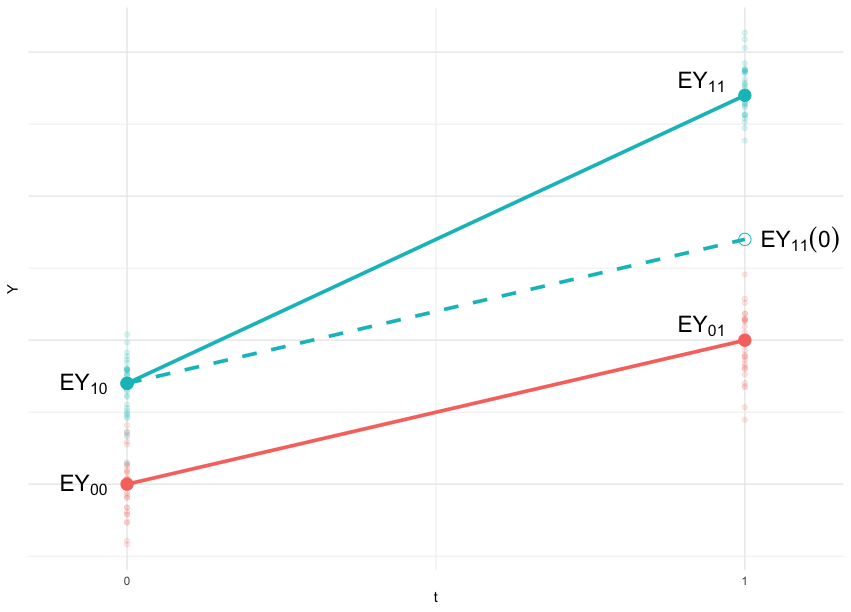
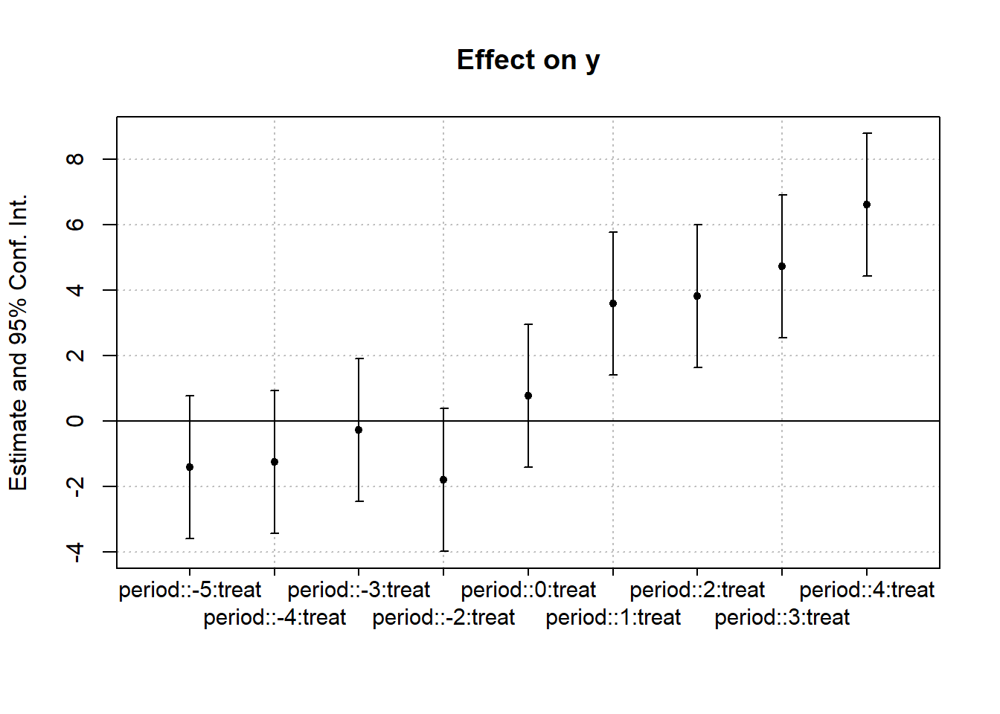
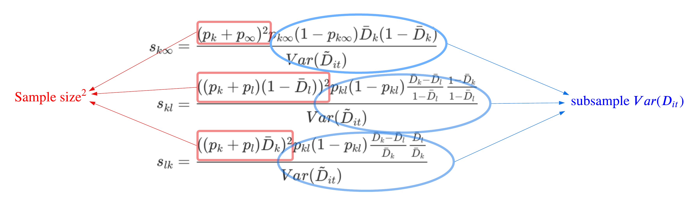
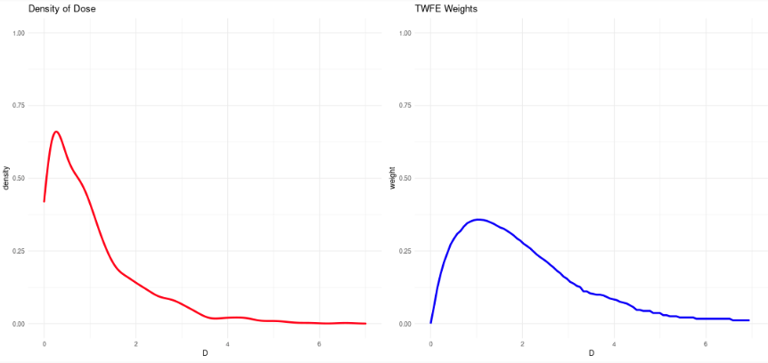
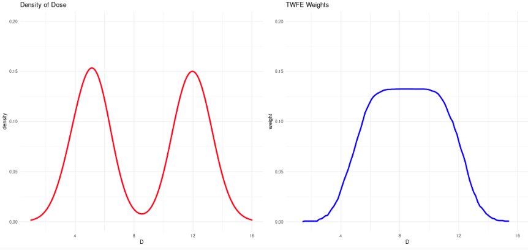

In this chapter, we will start from introducing the classic \(2 \times 2\) DiD, and then explore some common extensions used in the literature with the concerns identified in recent papers, including event study with all periods/binned end-points, staggered DiD with dynamic and heterogeneous treatment effects, continuous treatments, and discrete outcome variables. The staggered DiD issue has been extensively discussed in the literature and related slides/presentations can be easily found by searching on Google. There are two useful websites listed below for your convenience.
For a comprehensive overview of the recent DiD revolution, see Roth, Sant’Anna, Bilinski & Poe (2023) “What’s Trending in Difference-in-Differences?” published in the Journal of Econometrics. This paper provides a unified treatment of the key problems with TWFE under staggered adoption, surveys the major alternative estimators, and offers practical guidance on choosing among them. See also de Chaisemartin & D’Haultfeuille (2023) “Two-Way Fixed Effects and DID with Heterogeneous Treatment Effects: A Survey” for a complementary perspective.
Given that the new DiD literature has not converged yet, and some other issues with DiD are still under investigation, I will try to add my personal understandings to explain the intuition behind those issues and ideas. My personal understandings are in green, please read these words critically!
8.1 Classic DiD: \(2 \times 2\) setting
DiD is one of the earliest quasi-experiment identification strategy which traces back over 150 years to a paper by Snow (1855) modelling the transmission mode of cholera. In social science, this method was first applied by labor economist Ashenfelter (1978) to examining the effect of a training program on wage, and then became popular since the famous study by Card and Krueger (1993). Card and Krueger (1993) investigated the effect of increasing the minimum wage on employment in the natural experiment where New Jersey experienced an increase in the state minimum wage from \(4.25\) to \(5.05\) in November 1992, but neighboring Pennsylvania’s minimum wage was staying at \(4.25\). What these classic papers have in common is a \(2 \times 2\) DiD setting with 2 groups (one treated and one control) and 2 time periods.
\(2 \times 2\) DiD Setup
\(n\) units with groups \(g = 0, 1\) and time periods \(t = 0, 1\)
Group 1 \(g = 1\) is treated at time \(t = 1\)
\(Y_{gt}\): Observed outcome with group \(g\) at time \(t\)
\(Y_{gt}(1)\): Potential outcome if treated
\(Y_{gt}(0)\): Potential outcome if untreated
t = 0
t = 1
g = 0
\(Y_{00}\)
\(Y_{01}\)
g = 1
\(Y_{10}\)
\(Y_{11}\)

The parameter of interest is the ATT \[
\tau = \mathbb{E}[Y_{gt}(1) - Y_{gt}(0)|D_{gt} = 1]
\] where \(D_{gt}\) is the binary treatment status variable.
Note that \(D_{gt} = 1\) when \(G_i = 1\) and \(T_t = 1\), then the ATT can be written as \[
\tau = \mathbb{E}[Y_{gt}(1) - Y_{gt}(0)|G_i = 1, T_t = 1] = \mathbb{E}[Y_{11}(1) - Y_{11}(0)]
\]
Since we observe \(Y_{11}\), which is the outcome under treatment with \(\mathbb{E}[Y_{11}(1)] = \mathbb{E}[Y_{11}]\), \[
\tau = \mathbb{E}[Y_{11}] - \mathbb{E}[Y_{11}(0)]
\]
To identify \(\tau\), the problem reduces to the fundamental question for all causal inference problems: identify the unobserved counterfactual\(\mathbb{E}[Y_{11}(0)]\). We will rely on an assumption to achieve this.
Identification Assumption: Parallel Trend
The parallel trend assumption in \(2 \times 2\) setting is \[
\mathbb{E}[Y_{11}(0)] - \mathbb{E}[Y_{10}(0)] = \mathbb{E}[Y_{01}(0)] - \mathbb{E}[Y_{00}(0)]
\] For the control group, untreated outcome is always observed, so \(\mathbb{E}[Y_{0t}(0)] = \mathbb{E}[Y_{0t}]\). For the treated group, we need to make sure that \(\mathbb{E}[Y_{10}(0)] = \mathbb{E}[Y_{10}]\). This is known as the No Anticipation assumption. Using these equalities, we have \[
\mathbb{E}[Y_{11}(0)] = \mathbb{E}[Y_{10}] + \mathbb{E}[Y_{01}] - \mathbb{E}[Y_{00}]
\tag{8.1}\] and thus the ATT is identified
Note that the identification is nonparametric and design-based, as we do not need to impose any functional form of the outcome \(Y\).
Estimation of \(2 \times 2\) DiD
For the \(2 \times 2\) setting, there are various strategies to estimate \(\tau\). Equation 8.2 directly suggest an estimator by its sample analogy \[
\hat\tau = (\bar{Y}_{11} - \bar{Y}_{10}) - (\bar{Y}_{01} - \bar{Y}_{00})
\]
If we look at the observed outcome table from a static view, there are 4 groups of units. To estimate the differences and diff-in-diffs between groups using a regression, we need 3 dummy variables: \(G\), \(T\) and \(G \times T\), where \(G\) indicates groups and \(T\) indicates time periods. We also change the notation \(Y_{gt}\) to \(Y_{it}\) to represent each units, then the regression function is \[
Y_{it} = \alpha + \beta G_i + \gamma T_t + \tau G_i \times T_t + \epsilon_{it}
\tag{8.3}\] This regression type estimator gives the convenience of automatically obtaining the SE of \(\hat\tau\) in statistical softwares and are more widely used in empirical research. The equivalence of the two estimators above is not hard to show by discussing different values of \(G_i\) and \(T_t\) in the regression function and one can show
The two estimators above works under cross-sectional and panel data. If panel data were available, \(\tau\) can also be estimated using a two-way fixed effect (TWFE) regression \[
Y_{it} = \alpha_i + \gamma_t + \tau D_{it} + \epsilon_{it}
\tag{8.4}\] where \(D_{it} = G_i \times T_t\). The difference between Equation Equation 8.4 and Equation 8.3 is that, unit instead of group fixed effect is controlled for. This is more common in empirical work, but note the numerical equivalence of \(\tau\) between the two kinds of fixed effects \(\alpha_i\) and \(\alpha_g\).
With panel data, another estimation strategy follows a two-step procedure. We first difference the outcomes in two periods \[\begin{aligned}
Y_{i2} &= \alpha_g + \gamma_2 + \tau D_{i2} + \epsilon_{i2} \\
Y_{i1} &= \alpha_g + \gamma_1 + \tau D_{i1} + \epsilon_{i2} \\
\Delta Y_i &= (\gamma_2 - \gamma_1) + \tau \Delta D_i + \Delta \epsilon_i
\end{aligned}\] where \(\Delta D_i = D_{i2} - D_{i1} = G_i\) because treatment only happens in period \(2\). Then in the second step, we regress \(\Delta Y_i\) on \(G_i\) to estimate \(\tau\). This two-step procedure is basically the First Differencing (FD) estimator for TWFE, and is numerically equivalent to within-transformation estimator (default in Stata and plm package in R) for TWFE with 2 time periods. As a side note, this estimation procedure can help understand why time-invariant variables should not be included in the regression: all time-invariant variables (\(\alpha_i\)) with be differenced out and their effects on \(Y\) can not be identified (they will be omitted due to collinearity when running the regression).
8.2 Extension 1: Triple Difference (DDD)
In Card and Krueger (1993), the control and treated groups are the low-wage workers in PA and NJ, and by using DiD to identify ATT, the parallel trend assumption requires that the time shock \(\gamma\) is common in PA and NJ. However, what if the time shock is state-specific? To solve this issue, we need to introduce a hypothetically untreated group for each state: the high-wage workers. This method is called triple difference or DDD first introduced by Gruber (1994) but the formal derivation of DDD was not developed until recently by Olden and Møen (2022). Formally, the DDD is a \(2 \times 2 \times 2\) setting with 2 additional groups \(A\) and \(B\) where only group \(B\) can benefit from the treatment. Similar to DiD, the parameter of interest is the ATT \[
\tau = \mathbb{E}[Y_{bit}(1) - Y_{bit}(0)|B_b = 1, G_i = 1, T_t = 1] = \mathbb{E}[Y_{111}(1) - Y_{111}(0)]
\] which can be estimated by \[\begin{aligned}
\hat\tau &= \left((\bar{Y}_{111} - \bar{Y}_{110}) - (\bar{Y}_{101} - \bar{Y}_{100})\right) - \left((\bar{Y}_{011} - \bar{Y}_{010}) - (\bar{Y}_{001} - \bar{Y}_{000})\right)
\end{aligned}\] and the regression function is \[\begin{aligned}
Y_{itb} = \beta_0 &+ \beta_1 G_i + \beta_2 T_t + \beta_3 B_b + \\
& \quad \beta_4 G_i \times T_t + \beta_5 G_i \times B_b + \beta_6 T_t \times B_b + \\
& \quad \tau G_i \times T_t \times B_b + \epsilon_{itb}
\end{aligned}\]
Olden and Møen (2022) show that the “parallel trend” assumption for DDD is \[\begin{aligned}
\left(\mathbb{E}[Y_{111}(0)] - \mathbb{E}[Y_{110}(0)]\right) - \left(\mathbb{E}[Y_{011}(0)] - \mathbb{E}[Y_{010}(0)]\right) = \\
\left(\mathbb{E}[Y_{101}(0)] - \mathbb{E}[Y_{100}(0)]\right) - \left(\mathbb{E}[Y_{001}(0)] - \mathbb{E}[Y_{000}(0)]\right)
\end{aligned}\] Rather than a “parallel trend” assumption, this is more like a parallel difference of group A and B between treated and control group. This identification assumption is intuitive yet important, because some researchers believed that DDD requires two parallel trend assumptions to hold \[\begin{aligned}
\mathbb{E}[Y_{111}(0)] - \mathbb{E}[Y_{110}(0)] = \mathbb{E}[Y_{101}(0)] - \mathbb{E}[Y_{100}(0)] \\
\mathbb{E}[Y_{011}(0)] - \mathbb{E}[Y_{010}(0)] = \mathbb{E}[Y_{001}(0)] - \mathbb{E}[Y_{000}(0)]
\end{aligned}\] which may be more restrictive than DiD and Olden and Møen (2022) show that this is not the case. As long as the two trends deviate in the same direction (non-parallel), DDD identified the ATT. This also explains the bias reduction property of DDD compared with DiD noted by Berck and Villas-Boas (2016).
8.3 Extension 2: DiD with multiple time periods – Event Study
Let’s consider a panel data with multiple time periods and a treatment occurs at time \(t_0\) to the units in the treated group. \(2 \times 2\) DiD is still applicable if we only focus on period \(t_0 - 1\) and \(t_0\). But utilizing more time periods can helps us in at least two ways:
If we have multiple pre-treatment periods, we can “partially” “test” the parallel trend assumption (pre-trend test).
If we have multiple post-treatment periods, we can examine the dynamic of the treatment effect by estimating the effect in each post-treatment period.
Previously in \(2 \times 2\) DiD, \(D_{it}\) is the defined as the actual treatment indicator and equals to 1 only for the treated group after treatment period. To be able to estimate the placebo treatment effect before the treatment period (for per-trend test), and the actual treatment effect after the treatment period, we further define \(D_{it}^l\) as the indicator for unit \(i\) being \(l\) period away from the treatment, formally \[
D_{it}^l = 1\{t - t_0 = l\}
\] There is relationship \(D_{it} = \sum_{l \geqslant 0}D_{it}^l\). Implementation of DiD with multiple time periods is a natural extension of the TWFE in Equation 8.4, which is referred to as Event Study \[
Y_{it} = \alpha_i + \gamma_t + \sum_{l \neq -1}^T \tau_l D_{it}^l + \epsilon_it
\tag{8.5}\]
Note that because of the existence of \(\alpha_i\), one of the coefficients \(\tau_t\) is unidentified, so we need to drop one \(D_{it}\). This problem is similar to multiple group comparison, where for \(J\) groups, we only need \(J - 1\) dummies in a regression with intercept. The coefficients of \(J - 1\) dummies are the differences compared with the baseline group. In Event Study, researchers usually choose to drop \(D_{it}^0\) (current period) or \(D_{it}^{-1}\)(one period before), depending on whether the treatment effect is instantaneous or lagged. The basic idea is to choose a no-effect period as baseline and all coefficients \(\tau_t\) measure the effect relative to the baseline level.
For event study, we need a stronger version of parallel trend assumption to achieve identification \[
\mathbb{E}[Y_{it}(0) - Y_{it-l}(0)] = \gamma_t - \gamma_{t - l}
\] for all \(t\) and \(l\). I did not find a parallel trend assumption for Event Study that is universally agreed in the literature. This equation is one option to formally state the assumption, but it may be stronger than what is needed for identifying ATT in Event Study. This is testable in pre periods because \(\mathbb{E}[Y_{it}(0)] = \mathbb{E}[Y_{it}]\) for \(t < t_0\) with \(Y_{it}\) observed.
By combining the parallel trend assumption with the TWFE regression in Equation 8.5, we expect \(\hat\tau_t\) to be close to 0 with \(t < t_0\) and \(\tau_t\) to be statistically different from 0 with \(t > t_0\) if the treatment effect exists. A plot of \(\hat\tau_t\) is usually used to present these results.
Code
library(fixest)
Warning: package 'fixest' was built under R version 4.4.3
Code
data("base_did")base_did$period = base_did$period -6#treatment occurs at period 6twfe <-feols(y ~ x1 +i(period, treat, ref =-1) | id + period, base_did)coefplot(twfe, keep ="period")

In the above plot of Event Study using a simulation dataset, period \(-1\) is assumed to have 0 effect and used as the baseline. The pre-effects are not statistically different from 0, which passes the pre-trend test and the dynamic of the treatment effect is reflected by the increasing trend of \(\hat\tau\).
Two Variations of Event Study
There are two common variations of Event Study: static specification and “binning”. For static specification, the regression function changes to \[
Y_{it} = \alpha_i + \gamma_t + \tau D_{it} + \epsilon_{it}
\] This static specification estimates a single treatment effect that is time invariant. If the true treatment effects are dynamic, then this static specification estimates a weighted average of the dynamic treatment effects and the weights may be unreasonable in unbalanced panel data.
Another variation is often called “binning” in the literature \[
Y_{it} = \alpha_i + \gamma_t + \tau_{-K}\sum_{l < - K} D_{it}^l + \sum_{\substack{- K \leqslant l \leqslant L \\ l \neq -1}} \tau_l D_{it}^l + \tau_L\sum_{l > L} D_{it}^l + \epsilon_{it}
\] The “binning” specification is commonly used in panel data with many periods as it “bin” distant relative periods \([0, t_0 - K)\) and \((t_0 - L, T]\) and focuses on periods close to the treatment period. One alternative option for panel data with many periods is to exclude distant relative periods, however, this is less common in the literature according to a survey on Event Study papers in Sun and Abraham (2021).
These two variations simplifies the full period specification in Event Study to some extent, however, they are both less robust than Event Study, which will be further explained in Section Section 8.4.
Some Issues with Event Study
Event Study approach is even more popular in empirical work than the original DiD because its availability of pre-trend test and dynamic effects. However, unlike DiD, Event Study does not have a solid theoretical background and there seems to exist several issues that are not fully solved in the literature. Here, I want to discuss some of these issues.
Pre-trend test: The pre-trend test is “partial” and hardly a rigorous hypothesis test. First, The parallel trend assumption is for all time periods but pre-trend test only tests pre-periods, so it is not full evidence of the validity of the parallel trend assumption. Second, a valid hypothesis should have the desired hypothesis as \(H_1\) but in a pre-trend test, the desired hypothesis is \(H_0\) (coefficients of \(D_{it}^l\) when \(l < 0\) are 0). The best we can get from the test is that we “do not reject” \(H_0\), however, we cannot prove it is true.. Pre-trend tests are still important diagnostics, but I think a researcher should not rely too much on the test and should argue the validity of the parallel trend assumption using domain knowledge and the quasi-experimental design. Other issues with pre-trend tests, including low power of the test, bias induced by selecting baseline, are discussed in Roth (2022).
Identification assumption: The \(2 \times 2\) DiD is a nonparametric and designed-based approach, but Event Study is not. Imai and Kim (2012) show that the identification of Event Study highly relies on the linear parametric form in Equation 8.4, which means parallel trend assumption alone is not enough for Event Study to identify ATT. This requires researcher to provide justification of imposing the linear form of \(Y\) in Equation 8.4.
Including Covariates: Since Event Study is implemented as TWFE, including time-varying covariates in the regression is not rare in empirical work. Some researchers justify this by making conditional parallel trend assumptions given covariates and claim that including covariates in TWFE identifies causal effects under conditional parallel trends. This claim is not verified in the literature. Inspired by the recent papers about the bias in OLS estimation of ATE with covariates, I think this claim is most likely wrong. The reason is that OLS usually assign “strange” weights to treated and control groups according to covariates, which contaminates the causal effects. This issue also occurs in \(2 \times 2\) DiD. Goodman-Bacon (2021) has a section on this issue in the case of static specification.
8.3.1 Honest Parallel Trends with HonestDiD
A key limitation of pre-trend tests, as discussed above, is that failing to reject parallel trends does not prove they hold. (rambachan2023more?) formalize this concern by asking: how large would violations of parallel trends need to be to overturn the conclusions of a DiD study? Rather than treating parallel trends as a binary pass/fail test, their approach constructs robust confidence sets that remain valid under a range of possible violations. The researcher specifies a class of restrictions on how the pre-trends could deviate (for example, bounding the degree of nonlinearity in the differential trend), and the HonestDiD package computes confidence intervals for the treatment effect that account for these potential violations.
This sensitivity analysis is now considered best practice for DiD studies. If the conclusions survive plausible magnitudes of trend violations, the results are much more credible than simply reporting that pre-trend coefficients are individually insignificant. (roth2023what?) recommend this approach as part of their practical checklist for modern DiD applications.
Code
library(HonestDiD)library(fixest)# Simulate event study dataset.seed(123)n_units <-100; n_time <-10; treat_time <-6sim_data <-expand.grid(id =1:n_units, time =1:n_time)sim_data$treat <-ifelse(sim_data$id <=50, 1, 0)sim_data$rel_time <- sim_data$time - treat_timesim_data$post <-ifelse(sim_data$time >= treat_time, 1, 0)sim_data$y <-1+0.5* sim_data$treat * sim_data$post +rnorm(nrow(sim_data), sd =0.5) +rep(rnorm(n_units), each = n_time) +rep(rnorm(n_time), n_units)# Run event study with fixestes <-feols(y ~i(rel_time, treat, ref =-1) | id + time, sim_data)# Extract coefficients and vcov for event study termsidx <-grep("rel_time", names(coef(es)))betahat <-coef(es)[idx]sigma <-vcov(es)[idx, idx]# Sort by period (HonestDiD expects chronological order)periods <-as.numeric(gsub("rel_time::(-?[0-9]+):.*", "\\1", names(betahat)))ord <-order(periods)betahat <-unname(betahat[ord])sigma <-unname(sigma[ord, ord])periods <- periods[ord]# HonestDiD: pre-periods < 0, post-periods >= 0 (ref period -1 omitted)num_pre <-sum(periods <0)num_post <-sum(periods >=0)# Run sensitivity analysis using relative magnitudes# (createSensitivityResults_relativeMagnitudes is more robust)honest_did <- HonestDiD::createSensitivityResults_relativeMagnitudes(betahat = betahat,sigma = sigma,numPrePeriods = num_pre,numPostPeriods = num_post,Mbarvec =seq(0.5, 2, by =0.5))# Display sensitivity results as a table# Each row shows how the confidence set changes as we allow larger# violations of parallel trends (Mbar), relative to the max pre-trendknitr::kable(honest_did, digits =3,caption ="HonestDiD sensitivity analysis (relative magnitudes)")
Staggered treatment means that the treatment occurs multiple times to different units and the treatment is “absorbing”, which means once an unit is treated, it remains treated in the rest of the periods. In the staggered treatment setting, there are multiple groups of units defined by the timing of receiving the treatment. The canonical Event Study discussed in previous section extends the \(2 \times 2\) DiD to a \(2 \times T\) setting, and the staggered treatment extends Event Study to a \(G \times T\) setting.
With staggered treatment, all 3 specifications of Event Study fails to identify the ATT (or CATT conditional on periods). This problem is recognized in a large literature and multiple alternative estimators have been proposed. In this section, we will first discuss this mis-identification problem in static specification according to the famous Goodman-Bacon Decomposition in Goodman-Bacon (2021). Then we will show that this problem is not resolved in either the “binning” specification or the full period Event Study following the paper by Sun and Abraham (2021) and discuss their idea behind the new estimator they propose.
Other papers on this staggered treatment effect include Borusyak, Jaravel, and Spiess (2021), De Chaisemartin and d’Haultfoeuille (2020), Callaway and Sant’Anna (2021), Wooldridge (2021), etc and their extensions or variations such as Gardner (2022), Roth and Sant’Anna (2021), Sant’Anna and Zhao (2020). These papers vary subtly in the assumptions and building blocks, and provide solutions from different angles. My personal suggestion for reading these papers is to distinguish their assumptions, which helps understand the research question they are answering, and find their building blocks, which are used to develop their results and contributions. In the following discussion in this section, I will try to be explicit about the assumptions and building blocks in Goodman-Bacon (2021) and Sun and Abraham (2021).
With staggered treatment, the treatment occurs to different units at different periods. To distinguish the treated groups with different timing of initial treatment, we call the the units with the same initial treatment period “cohort”, formally
\(E_i = \min\{t: D_{it} = 1\}\), the period of initial treatment and \(E_i = \infty\) for never treated units
\(E_i = \infty\) for never treated units
Treatment Cohort: a group \(\{i: E_i = e\}\)
Given that we have different cohorts across which there may exist heterogeneity, we change the notation of potential outcomes
\(Y_{it}^e\) is the potential outcome in response to treatment that first occurs in period \(e\)
and he asks the question: if \(D_{it}\) is staggered, then what is \(\hat\tau\)? Let us start from the 3-group setting, where 2 groups are treated at different periods \(k\) and \(l\) and a never treated group \(U\). The groups are indexed by the period of their initial treatment. The data structure is plotted in Figure 1 below in Goodman-Bacon (2021). This plot is widely used in lecture slides as it visually displays the simplest situation in staggered DiD. I want to point out that the treatment effect in the plot is heterogeneous (vary across groups) but non-dynamic, however, the following decomposition does not require this assumption and holds when the treatment effect is either dynamic or heterogeneous. For each time some units get treated, we can find a time-group specific \(2 \times 2\) DiD design, and all four possible \(2 \times 2\) DiDs are plotted in Figure 2.
A and B are “Treated vs Never Treated” CATT estimators for groups \(k\) and \(l\) (aggregated over post-periods), C is “Treated vs Not Yet Treated” CATT estimator. D is problematic because it is doing a wrong comparison “Late Treated vs Early Treated”. Given the plots, it is natural to decompose \(\hat\tau\) in terms of the four DiDs.
\(2 \times 2\) DiDs are the building blocks to decompose staggered DiDs
Now the first challenge is to figure out the formula of \(\hat\tau\) as a function of fixed effects and \(Y\). The trick is to use the Frisch-Waugh-Lovell (FWL) theorem we discussed in Section Section 3.5 to partial out fixed effects in \(D_{it}\) and \(Y_{it}\) and then do a simple linear regression.
Partial out fixed effects in treatment \(D_{it}\)(coincides with the within transformation) \[
\tilde{D}_{it} = D_{it} - \bar{D}_i - \bar{D_t} + \bar{\bar D}_{it}
\]
Simple linear regression of \(\tilde{Y}\) on \(\tilde{D}\)\[
\hat\tau = \frac{Cov(\tilde{D}_{it}, Y_{it})}{Var(\tilde{D}_{it})} = \frac{\frac{1}{NT}\sum_i\sum_t \tilde{D}_{it}Y_{it}}{\frac{1}{NT}\sum_i\sum_t \tilde{D}_{it}^2}
\]
The decomposition aims to separate the covariance in the whole sample into covariance by cohorts \[
\hat\tau = \frac{1}{Var(\tilde{D}_{it})}\left(\sum_{e = \{\infty, k, l\}}\sum_{e' > e}p_e p_{e'}\frac1T\sum_t(\bar{Y}_{et} - \bar{Y}_{e't})(\bar{D}_{et} - \bar{D}_e - \bar{D}_{e't} + \bar{D}_{e'})\right)
\] where \(p_e = \frac{\sum_i1\{E_i = e\}}{N}\) is the proportion of the cohort \(e\). By rearranging the RHS (details can be found in the Appendix of Goodman-Bacon (2021)), the final decomposition of \(\hat\tau\) is given by \[
\hat\tau = s_{k\infty}\hat\tau_{k\infty} + s_{l\infty}\hat\tau_{l\infty} + s_{kl}\hat\tau_{kl} + s_{lk}\hat\tau_{lk}
\] where

and the weights are positive with \(s_{k\infty} + s_{l\infty} + s_{kl} + s_{lk} = 1\).
This decomposition can be generalized to multiple (more than 3) groups.
Theorem 8.1 (Goodman-Bacon Decomposition)\[
\hat\tau = \sum_{e \neq \infty} s_{e\infty}\hat\tau_{e\infty} + \sum_{e \neq \infty}\sum_{e' > e}(s_{ee'}\hat\tau_{ee'} + s_{e'e}\hat\tau_{e'e})
\] The weights \(s\) are positive and sum to 1.
So far, we derived \(\hat\tau\) as a convex combination of \(\hat\tau\)s in multiple \(2 \times 2\) DiDs. But remember, \(\hat\tau_{lk}\) is obtained in a wrong comparison and does not necessarily have a causal interpretation. To fully understand \(\hat\tau\), we need to further decompose \(\hat\tau_{lk}\).
Define the ATT for a cohort \(e\) in a certain period \[
ATT_e(\text{Period}) = \mathbb{E}[CATT_{el}|l \in \text{Period}]
\tag{8.6}\]
Then under parallel trend assumption, we have \[\begin{aligned}
\hat\tau_{k\infty} &\xrightarrow{p} ATT_k(\text{POST}(k)) \\
\hat\tau_{l\infty} &\xrightarrow{p} ATT_l(\text{POST}(l)) \\
\hat\tau_{kl} &\xrightarrow{p} ATT_k(\text{MID}(k, l)) \\
\hat\tau_{lk} &\xrightarrow{p} ATT_l(\text{POST}(l)) - \color{red}{[ATT_k(POST(l)) - ATT_k(\text{MID}(k, l))]}
\end{aligned}\]
Plugging these results in \(\hat\tau\), we have \[\begin{aligned}
\hat\tau \xrightarrow{p} &\sum_{e \neq \infty} \sigma_{e\infty}ATT_e(\text{POST}(k)) \\
&+ \sum_{e \neq \infty}\sum_{e' > e}(\sigma_{ee'}ATT_e(\text{MID}(k, l)) + \sigma_{e'e}ATT_{e'}(\text{POST}(l))) \\
&- \sum_{e \neq \infty}\sum_{e' > e}\sigma_{e'e}\underbrace{\color{red}{[ATT_e(POST(l)) - ATT_e(\text{MID}(k, l))]}}_{\color{red}{\Delta ATT}}
\end{aligned}\] where \(\sigma\) are probability limits of \(s\).
Finally, we are ready to make interpretations on the TWFE estimator \(\hat\tau\) under the assumption on the treatment effect
Interpretation Assumption: Treatment effect is either heterogeneous or dynamic
Homogeneous and Static Treatment Effect
\(\Delta ATT = 0\)
\(\hat\tau \xrightarrow{p} ATT\) because of homogeneity and weights sum to 1
TWFE (static specification) identifies VWATT (variance weighted ATTs in cohorts)
Homogeneous and Dynamic Treatment Effect
\(\Delta ATT \neq 0\)
\(\Delta ATT\) is the source of negative weights discussed in Borusyak, Jaravel, and Spiess (2021)
TWFE (static specification) does not have a causal interpretation
The decomposition results show that in staggered DiD, researchers should use TWFE with caution because the causal interpretation of the estimator requires strong assumptions on the treatment effect. Another safer option is to report the cohort ATTs directly. The decomposition can be implemented using R or Stata package bacondecomp. Goodman-Bacon (2021) also discusses the identification assumption of VWATT in bullet point 2, which is a weighted parallel trend assumption and provides testing methods along with illustrative applications.
Summary
This paper focuses on the Static Specification
The decomposition is based on all possible \(2 \times 2\) DiDs
The decomposition is an application of Frisch-Waugh-Lovell theorem on TWFE
The TWFE estimator is a variance weighted estimator
Causal interpretation of TWFE (weights are positive) requires the treatment effect to be constant over time (no dynamic effects)
Package bacondecomp available in R and Stata
8.4.2 Event Study in Staggered DiD
Decomposition
In the derivation of Goodman-Bacon decomposition, TWFE estimator of Static Specification is shown to be a weighted estimator due to aggregation of ATTs in two levels: across relative time periods (Equation Equation 8.6), and across cohorts (the variance weights). If we avoid aggregation across relative periods by using the Event Study, can we resolve the negative weights issue discussed in Goodman-Bacon (2021)? These questions are nicely answered by Sun and Abraham (2021). They show that the negative weights issue persists in Event Study and propose an alternative estimator to the Event Study coefficients. This paper is my favorite among all the papers I have read about staggered DiD because they show the issue with Event Study (or Static Specification as a special case) is essentially a misspecification/omitted variable bias (OVB) issue in linear regression. It is a misuse of a tool, so the solution they propose is one correct way to use linear regression. Another way to correctly use linear regression in staggered DiD is proposed in Wooldridge (2021).
Sun and Abraham (2021) focus on the Event Study Specification \[
Y_{it} = \alpha_i + \gamma_t + \sum_{l = -K}^{-2} \tau_l D_{it}^l + \sum_{l = 0}^{L}\tau_l D_{it}^l + \epsilon_{it}
\]
This specification is more flexible than our previous full period Event Study specification in Equation 8.5 as
It distinguishes the effects in leads (treated period) and lags (pre-trend)
It allows for non-full period specification
included relative periods: \(g^{incl} = \{-K, ..., 0, ..., L\}\)
Static Specification and “binning” can be constructed as special cases of this specification
The building blocks in Sun and Abraham (2021) are the cohort specific treatment effects \(CATT_{el}\) for cohort \(e\) in period \(l\)
The following derivation is based on Event Study specification, which is a simpler version of the general results in Sun and Abraham (2021). The central idea is to decompose \(\tau_l\) into \(CATT_{el}\). We will first consider a saturated model of \(Y_{it}\), which is guaranteed to be a correctly specified linear model, and then use the OVB formula to link \(\tau_l\) to the coefficients in the saturated model. Consider saturating \(Y_{it}\) using fixed effects and cohort dummies \[\begin{aligned}
Y_{it} &= \sum_e \alpha_e \cdot 1\{E_i = e\} + \sum_s \gamma_s \cdot 1\{t = s\} \\
&\quad + \sum_{l \in g^{incl}} \sum_e \delta_{el} (D_{it}^l \cdot 1\{E_i = e\}) \\
&\quad + \sum_{l' \in g^{excl}} \sum_e \delta_{el'} (D_{it}^{l'} \cdot 1\{E_i = e\}) + \epsilon_{it}
\end{aligned}\]
Under parallel trend assumption, this saturated model can be re-written as \[\begin{aligned}
Y_{it} &= \sum_e \mathbb{E}[Y_{it}^\infty|E_i = e] \cdot 1\{E_i = e\} + \sum_s \mathbb{E}[Y_{is}^\infty - Y_{i0}^\infty] \cdot 1\{t = s\} \\
&\quad + \sum_{l \in g^{incl}} \sum_e CATT_{el} (D_{it}^l \cdot 1\{E_i = e\}) \\
&\quad + \sum_{l \in g^{excl}} \sum_e CATT_{el'} (D_{it}^{l'} \cdot 1\{E_i = e\}) + \epsilon_{it}
\end{aligned}\]
Now let us compare the saturated model with the Event Study specification. Then in order to decompose \(\tau_{l}\) in terms of the \(CATT_{el}\) with \(l\) in \(g^{incl}\) or \(g^{excl}\) in the saturated model, we apply the OVB formula, which is a variation of FWL used to derive Goodman-Bacon Decomposition.
We find all of its associated regressors for each cohort \(e\) in the saturated model \(D_{it}^{l'} \cdot 1\{E_i = e\}\), take the CATTs
Multiply the CATTs with the regression coefficients in \[
D_{it}^{l'} \cdot 1\{E_i = e\} = \alpha_i + \gamma_t + \sum_{l \in g^{incl}} w_{el'}^{l} D_{it}^{l} + \nu_{it}
\]
Recap of OVB: Consider a model \(Y = \theta D + X\beta + \lambda Z + \epsilon\), if \(Z\) is omitted and we run a linear regression of \(Y = \theta' D + X\beta' + \epsilon\), then the OVB formula for \(\theta'\) is \(\theta' = \theta + \lambda \cdot \xi\), where \(\xi\) is from the regression \(Z = X\beta'' + \xi D + \nu\)
Proposition 8.1 (Event Study Decomposition) Under parallel trend assumption, \[
\tau_l = \underbrace{\sum_e w_{el}^l CATT_{el}}_{\text{good}} + \underbrace{\sum_{l' \neq l, l' \in g^{incl}} \sum_e w_{el'}^l CATT_{el'} + \sum_{l' \in g^{excl}}\sum_e w_{el'}^l CATT_{el'}}_{\color{red}{\text{contamination}}}
\] and
For own relative period \(\sum_e w_{el}^l = 1\)
For other included period \(\sum_e w_{el}^{l'} = 0\) for each \(l' \neq l\)
For excluded period \(\sum_{l' \in g^{excl}}\sum_e w_{el'}^l = -1\)
The interpretation of this decomposition result is that if \(w_{el'}^l \neq 0\), the ATT \(\tau_l\) in period \(l\) is contaminated by \(CATT_{el'}\) from other included and excluded periods. But \(w_{el'}^l\) is the correlation between \(D_{it}^l\) and \(D_{it}^{l'}\), intuitively they should be mutually exclusive, why and when can \(w_{el'}^l \neq 0\)? This almost always happens because the panel is not balanced in both calendar \(t\) and relative periods \(l\) when there are multiple cohorts. Some of the weights \(w_{el'}^l\) are negative because the sum is 0 which breaks the causal interpretation of \(\tau_l\). If we compare the decomposition in Event Study and Goodman-Bacon Decomposition, the complicated variance weights are simplified in Event Study because we avoid aggregating the \(CATT_{el}\) across relative period \(l\), however, new contamination is induced by imposing multiple \(D_{it}^l\). The source of the negative weights in Goodman-Bacon decomposition is a wrong comparison, but in Event Study, this is not the case and the negative weights are a component of OVB. In Event Study, since \(\tau_l\) for \(l < 0\) in pre-treat periods is also contaminated, which can invalid the pre-trend test.
Proposition 8.2 (Invalidity of the Pre-trend Test) Under parallel trend assumption and no anticipation, for \(l < 0\)\[
\tau_l = \sum_{l' \geqslant 0} \sum_e w_{el'}^l CATT_{el'} + \sum_{l' \in g^{excl}, l' \geqslant 0}\sum_e w_{el'}^l CATT_{el'}
\]
The no anticipation assumption restricts all \(CATT_{el} = 0\) for \(l < 0\), but \(\tau_l\) is not 0 because of the existence of the contamination terms. Proposition 8.2 indicates that even if anticipation is ruled out and treatment effect in pre-trend is 0, it is still possible to have non-zero estimates for pre-trend in Event Study and we are likely to have false rejections in pre-trend tests.
The above decomposition and propositions are under the common assumptions in DiD: parallel trend and/or no anticipation. If we impose restrictions on the heterogeneity of the treatment effect, we could be able to better interpret the decomposition result.
Interpretation Assumption: Treatment effect is homogeneous and dynamic
Proposition 8.3 (Homogeneous Treatment Effect) Under parallel trend and treatment effect homogeneity, we have \(CATT_{el} = ATT_l\) for a given \(l\)\[
\tau_l = ATT_l + \sum_{l' \in g^{excl}} w_{l'}^l ATT_{l'}
\]
When treatment effect is homogeneous, the included period contamination \(\sum_{l' \neq l, l' \in g^{incl}} \sum_e w_{el'}^l CATT_{el'} = 0\) because the weights sum to 0 for each \(l'\). Then the only contamination left is from excluded periods. Given Proposition 8.3, I have some additional notes:
Full period Event Study is more robust than Static or “binning” Specification. Because if all periods are included, we only need to exclude \(l = -1\) period to avoid collinearity, for which period \(ATT_{-1} = 0\) by no anticipation. Therefore, full period Event Study identifies ATT under homogeneity in staggered DiD, but Static or “binning” Specification cannot.
This is another difference between Event Study Goodman-Bacon Decomposition which may help us to understand the source of negative weights. Static Specification has a causal interpretation when effects are non-dynamic, while Event Study has a causal interpretation (exact ATT) when effects are non-heterogeneous.
If we do not use full period Event Study and some distant post-treat periods are excluded, the contamination problem is more serious because for those periods \(ATT_{l'}\) are not necessarily 0. In this case, the regression is doing some kind of “normalization” of \(ATT_{l'}\) by \(\sum_{l' \in g^{excl}}\sum_e w_{el'}^l = -1\) and then use this non-zero term as the baseline.
Alternative Estimator
Sun and Abraham (2021) proposes an alternative estimator of the ATTs in staggered DiD. The idea is straightforward: estimate the saturated model and aggregate \(CATT_{el}\) using correct weights \(w_{el}^l\).
Estimate the weights by sample shares \(\widehat{Pr}(E_i = e|E_i \in [-l, T - l])\)
Aggregate \(\hat\tau_{el}\) to obtain the interaction-weighted (IW) estimator by \[
\hat\tau^{IW} = \sum_e \hat\tau_{el} \widehat{Pr}(E_i = e|E_i \in [-l, T - l])
\]
This IW estimator is simple to manually implement as we only need to estimate the sample shares and create the interacted regressor \(1\{E_i = e\} \cdot D_{it}^l\). Alternatively, in Stata, we can use the package eventstudyinteract provided by the authors and in R, we have the function sunab in package fixest. Note that IW estimator is based on the building blocks \(CATT_{el}\) which allows for heterogeneous and dynamic treatment effects and guarantees consistent estimate of \(ATT_{l}\) without restrictions on the treatment effects.
Summary
This paper focuses on Event Study Specification
The decomposition is based on \(CATT_{el}\) for each cohort and relative period
The decomposition is an application of OVB formula in TWFE
ATT is identified in full period Event Study under homogeneous treatment effect across cohorts
The contamination can invalid pre-trend tests
Alternative estimator estimates the saturated model and aggregate CATTs, robust to heterogeneous and dynamic treatment effects
8.4.3 Simulations and Comparisons of Different Estimators
In this section, we use simulated datasets to show some of previous discussion on Event Study in staggered DiD and compare the performance of different estimators.
library(did)library(didimputation)library(polars)library(DIDmultiplegtDYN)library(etwfe)library(synthdid)library(did2s)library(ggthemes)library(MetBrewer)library(tidyverse)set.seed(20230130)true_mu <-1# Dynamic and Homogeneousmake_data2 <-function(nobs =80, nstates =8) {# unit fixed effects (unobservd heterogeneity) unit <-tibble(unit =1:nobs,# generate statestate =sample(1:nstates, nobs, replace =TRUE),unit_fe =rnorm(nobs, state/5, 1),# generate instantaneous treatment effect#mu = rnorm(nobs, true_mu, 0.2)mu = true_mu )# year fixed effects (first part) year <-tibble(year =1980:2010,year_fe =rnorm(length(year), 0, 1) )# Put the states into treatment groups treat_taus <-tibble(# sample the states randomlystate =sample(1:nstates, nstates, replace =FALSE),# place the randomly sampled states into 1\{t \ge g \}G_gcohort_year =sort(rep(c(1986, 1992, 1998, 2004), 2)) )# make main dataset# full interaction of unit X year expand_grid(unit =1:nobs, year =1980:2010) %>%left_join(., unit) %>%left_join(., year) %>%left_join(., treat_taus) %>%# make error term and get treatment indicators and treatment effects# Also get cohort specific trends (modify time FE)mutate(error =rnorm(nobs*31, 0, 1),treat =ifelse((year >= cohort_year)* (cohort_year !=2004), 1, 0),tau =ifelse(treat ==1, mu, 0),year_fe = year_fe +0.1*(year - cohort_year) ) %>%# calculate cumulative treatment effectsgroup_by(unit) %>%mutate(tau_cum =cumsum(tau)) %>%ungroup() %>%# calculate the dep variablemutate(dep_var = (2010- cohort_year) + unit_fe + year_fe + tau_cum + error) %>%# Relabel 2004 cohort as never-treatedmutate(cohort_year =ifelse(cohort_year ==2004, Inf, cohort_year))}# make datadata <-make_data2()# plotplot2 <- data %>%ggplot(aes(x = year, y = dep_var, group = unit)) +geom_line(alpha =1/8, color ="grey") +geom_line(data = data %>%group_by(cohort_year, year) %>%summarize(dep_var =mean(dep_var)),aes(x = year, y = dep_var, group =factor(cohort_year),color =factor(cohort_year)),size =2) +labs(x ="", y ="Value", color ="Treatment group ") +geom_vline(xintercept =1986, color ='#E41A1C', size =2) +geom_vline(xintercept =1992, color ='#377EB8', size =2) +geom_vline(xintercept =1998, color ='#4DAF4A', size =2) +#geom_vline(xintercept = 2004, color = '#984EA3', size = 2) + scale_color_brewer(palette ='Set1') +theme_clean() +theme(legend.position ='bottom',#legend.title = element_blank(), axis.title =element_text(size =14),axis.text =element_text(size =12)) +scale_color_manual(labels =c("1986", "1992", "1998", "Never-treated"),values =c("#E41A1C", "#377EB8", "#4DAF4A", "#984EA3"))+ggtitle("One draw of the DGP with homogeneous and dynamic treatment effects")+theme(plot.title =element_text(hjust =0.5, size=12))plot2
(The Wooldridge estimator is currently commented out in the code file, because the updated etwfe package is bugged)
All of the alternative estimators work well in staggered DiD, then which one should we choose? The ones with the smallest standard errors (i.e Sun & Abraham or Imputation or ETWFE)? This is probably not a good idea.
Sun & Abraham does not allow comparison between treated and not-yet-treated, this is the major source of efficiency loss in their estimator. But in the simulation, we see that it is working fine and the efficiency loss is not unacceptable. - CSA has a large standard error because their inference is uniform/simultaneous instead of point-wise confidence intervals for each period. This gives robustness multiple testing (like pre-trend test, or statistical significance of every ATTs in post-periods) in Event Study, which is usually ignored in practice. As far as I know, they are the only one to take this problem into account. - dCDH has a large standard error, and also time-consuming, because it is probably the most robust method among the estimators simulated in this section. The results in De Chaisemartin and d’Haultfoeuille (2020) apply to any TWFE estimator, not only DiD. Moreover, their estimator allows for non-absorbing treatment (treatment can turn on and off for units). - ETWFE has a small standard error but you may notice that this method can not estimate pre-trends due to its specification design. The efficiency comes at the cost of pre-trend test. Note that ETWFE estimators of the ATTs are numerically equivalent to CSA but more efficient.
How should we choose which one to use? My personal advice is to be explicit about the assumptions and potential violations in your natural experiment design, and then choose the estimator that suits these assumptions best. It does not make sense to me to implement all these methods in one paper, or try to do the famous Goodman-Bacon decomposition all the time even in Event Study.
Classification of these methods:
Saturated model with TWFE (Sun and Abraham 2021; Wooldridge 2021): There is nothing wrong with TWFE, it is us who are misusing TWFE in Event Study. The solution is to use a saturated specification to capture the heterogeneity and dynamics in treatment effects overlooked by canonical Event Study. Sun and Abraham (2021) propose to interact dynamic effects with cohorts, while Wooldridge (2021) proposes to interact cohort effects with time.
Imputation (Borusyak, Jaravel, and Spiess 2021; Gardner 2022): First estimate a model for the not-yet-treated outcomes with pure fixed effects \(Y_{it} = \alpha_i + \gamma_t + \epsilon_{it}\), then calculate \(ATT_{it} = Y_{it} - \alpha_i - \gamma_t\) for the treated units. This method is called “imputation” because it estimates and impute the unobserved \(Y(0)\) for the treated units. Borusyak, Jaravel, and Spiess (2021) show that this class of methods is efficient.
Inverse propensity weighting (IPW) (Callaway and Sant’Anna 2021): The idea is to use IPW to nonparametrically identify the ATTs. Because the identification is nonparametric, this estimator is more flexible as the comparison can be made between treated units and the never-treated units or the not-yet-treated units (used in simulation). The latter comparison also means that this method allows for all units being eventually treated.
Aggregating \(2 \times 2\) DiDs(De Chaisemartin and d’Haultfoeuille 2020): The original paper focused on Static Specification and developed a decomposition theorem similar to Goodman-Bacon (2021). This method was later extended to Event Study by the same authors.
8.5 Extension 4: DiD with Continuous Treatment
This section is based on a working paper by Callaway, Goodman-Bacon, and Sant’Anna (2021) and a short summary of this paper by Brantly Callaway.
The design of DiD requires a binary treatment occurring at some period, which can be regarded as a treatment being “turned on” and comparisons are made between treatment and control before and after the treatment. Many DiD applications deviate from this setup and have a multi-valued treatment, such as COVID vaccination where people are recommended to take one dose every few months, or a continuous treatment, such as pollution dissipates across space. For simplicity, we could call DiD with continuous or multi-valued treatment as continuous DiD, and think of multi-valued treatment as a special case. Despite no theoretical development of continuous DiD, the justification of using continuous DiD in empirical work is often a simple extension of the TWFE regression in Equation 8.4. However, Callaway, Goodman-Bacon, and Sant’Anna (2021) shows that this extension is not that straightforward: stronger assumptions are needed to identify a weighted average of some causal effects and the weights can be unreasonable when the distribution of the continuous treatment is “strange”. In this section, we discuss DiD with continuous treatment in a simple 2 period setting to show the underlying problem with continuous DiD and the solution provided in Callaway, Goodman-Bacon, and Sant’Anna (2021).
Causal Parameter of Interest
We need to slightly modify the notations.
Two periods: \(t\) and \(t - 1\)
A continuous treatment \(D_{i}\), which is called “dose”
\(Y_{it}(d)\): potential outcome if receive dose \(D_{it} = d\)
\(Y_it\): observed outcome with \(Y_{it} = Y_{it}(D_i)\) and \(Y_{it - 1} = Y_{it - 1}(0)\)
Here \(D_i\) is not the actually treatment status variable, but similar to \(G_i\), which indexes each group with the dose they receive. These are the notations in a generalized potential outcome framework where the treatment is no longer 0 and 1. Now, the first question we need to think of is “what are the causal effects we want to identify in this case?” In binary DiD, the ATT can be rewritten using the new notations as \(\mathbb{E}[Y_{it}(1) - Y_{it}(0)|D_{i} = 1]\). Analogously, we can define Level Effects for continuous DiD \[
ATT(\color{red} d|\color{blue} d) = \mathbb{E}[Y_{it}(\color{red} d) - Y_{it}(0)|D_i = \color{blue} d]
\] The interpretation is: The average effect of dose \(d\) relative to not being treated local to the group that actually experienced dose \(d\).
The level effects seem to be a natural parameter of interest for multi-valued treatment but is less natural when the treatment is continuous, for which it would be more intuitive to focus on the partial (or marginal) effect. Analogous to the Average Causal Response (ACR) introduced in Angrist and Imbens (1995), we define Slope Effect for continuous DiD \[
ACRT(\color{red} d|\color{blue} d) = \frac{\partial ATT(l|\color{blue} d)}{\partial l} \Big\vert_{l = \color{red} d} \quad \text{and} \quad ACRT^O = \mathbb{E}[ACRT(D|D)|D > 0]
\] The interpretation is: \(ACRT(d|d)\) is the causal effect of a marginal increase in dose local to units that actually experienced dose \(d\). And \(ACRT^O\) averages \(ACRT(d|d)\) over the population distribution of the dose.
For multi-valued treatment, because of the discreteness of the treatment, the slope effect needs to be written as the difference between two ATTs of dose levels \[
\text{For possible dose} \ \{d_1, d_2, ..., d_J\}: ACRT(d_j|d_j) = ATT(d_j|d_j) - ATT(d_{j - 1}|d_j)
\]
If we regard binary DiD as a special case of continuous DiD, then the level effect and slope effect are \[\begin{aligned}
ATT(1|0) = \mathbb{E}[Y_{it}(1) - Y_{it}(0)|D_i = 1] = ATT \\
ACRT(1|1) = ATT(1|1) - ATT(0|1) = ATT
\end{aligned}\] This confirms the rationality of the definitions of level effect and slope effect, and more interestingly, for binary treatment, both level and slope effect are ATT.
This identification procedure follows from the binary DiD and everything seems fine. However, if we take a closer look at this \(ATT(d|d)\) identified by the standard parallel trend assumption, it is “weak” in the sense that, every effect is identified by comparing with the control group so we do not have the ability to identify the ATT of increasing the dose level. For example, we want to investigate the efficacy of a Covid vaccine in 2021. The data we collected include people who have taken 1, 2 or 3 doses, then under the standard parallel trend assumption, we can identify whether 1, 2 or 3 vaccines provide immunity, but we are unable to identify the immunity gain of taking one extra dose. But if \(ATT(d_h|d_h)\) for high level dose and \(ATT(d_l|d_l)\) for low level dose are identified under standard parallel trend assumption, why can’t we obtain the ATT of changing low level dose to high level by \(ATT(d_h|d_h) - ATT(d_l|d_l)\)? This is because \[\begin{aligned}
ATT(d_h|d_h) - ATT(d_l|d_l) &= \underbrace{ATT(d_h|d_h) - ATT(d_l|d_h)}_{\text{Slope Effect}} + \underbrace{ATT(d_l|d_h) - ATT(d_l|d_l)}_{\text{Selection Bias}} \\
\end{aligned}\] The selection bias term is the difference between low dose effect on the units that receive low dose and low dose effect on the units that receive high dose.
The identification result under standard parallel trend assumption may be good enough for some empirical study, but we also have strong motivation to find out the effect of increasing dose levels because it corresponding to medication/vaccination guidance and policy intensity and so on. Callaway, Goodman-Bacon, and Sant’Anna (2021) provides one way to identify some causal effect of varying dose level by making a slightly stronger assumption. To show this, we have to take some detour.
ATE is a better parameter when comparing between dose effects \[
ATE(d_h) - ATE(d_l) = \mathbb{E}[Y_{it}(d_h) - Y_{it}(0)] - \mathbb{E}[Y_{it}(d_l) - Y_{it}(0)] = \mathbb{E}[Y_{it}(d_h) - Y_{it}(d_l)]
\]
The idea here is intuitive: let’s cancel the selection bias term using alternative causal effect that does not vary across groups. Naively, I can assume the treatment effect of dose \(d\) is homogeneous across units, then \(ATE(d_l) = ATT(d_l|d_h) = ATT(d_l|d_l)\) and the selection bias is cancelled out. However, homogeneity is a strong assumption which we should not impose in general cases. The solution in Callaway, Goodman-Bacon, and Sant’Anna (2021) is more sophisticated and less restrictive.
Strong Parallel Trend
ATEs are also not identified under the standard parallel trend assumption. Instead, we will make a strong parallel trend assumption \[
\mathbb{E}[Y_{it}(d) - Y_{it - 1}(0)] = \mathbb{E}[Y_{it}(d) - Y_{it - 1}(0)|D_i = d] \quad \text{for all } d
\] This strong parallel trend assumes the dose effect averaged across all dose groups is equal to the dose effect in the group that actually received that dose. It involves all treated units rather than just control units in standard parallel trend assumption. This assumption is weaker than assuming homogeneity and not strictly stronger than the standard parallel trend assumption (good news! see the proof in Callaway, Goodman-Bacon, and Sant’Anna (2021)) . Under strong parallel trend, \[\begin{aligned}
ATE(d) &= \mathbb{E}[Y_{it}(d) - Y_{it}(0)] \\
&= \mathbb{E}[Y_{it}(d) - Y_{it - 1}(0)] - \mathbb{E}[Y_{it}(0) - Y_{it - 1}(0)] \\
&= \mathbb{E}[Y_{it}(d) - Y_{it - 1}(0)|D_i = d] - \mathbb{E}[Y_{it}(0) - Y_{it - 1}(0)|D_i = 0] \\
&= \mathbb{E}[Y_{it} - Y_{it - 1}|D_i = d] - \mathbb{E}[Y_{it} - Y_{it - 1}|D_i = 0]
\end{aligned}\]Notice that this is exactly the expression of \(ATT(d|d)\), however, here we have different interpretation under different assumption. This also indicates that it is impossible to distinguish standard and strong parallel trend assumption using pre-trend test.
A side note: There is some debate on whether DiD requires random treatment assignment (I prefer no). Here we might be able to gain some hints. The standard parallel trend assumption itself is not necessarily relate to random assignment. Now consider that Random assignment is independence, implying mean independence\(\mathbb{E}[Y(d)] = \mathbb{E}\), implying strong parallel trend assumption, but not vice versa. Therefore, we have the relationship that random assignment is stronger than strong parallel trend, which is not strictly stronger than standard parallel trend.
So far, the selection bias issue in comparing ATTs across dose is solved by ATE and the identification assumption for ATE is developed.
TWFE Estimation of continuous DiD
In empirical work, TWFE is usually implemented to estimate continuous DiD. A separate issue from the identification result we discussed above is that, what is actually estimated using TWFE? Callaway, Goodman-Bacon, and Sant’Anna (2021) shows that in 2 period setting, using the regression \[
Y_{it} = \alpha_i + \gamma_t + \tau D_i \times Post_t + \epsilon_{it}
\] the estimand under standard parallel trend is \[
\tau = \int_d w_1(l) \left[\underbrace{ACRT(l|l)}_{\text{causal}} + \underbrace{\frac{\partial ATT(l|h)}{\partial h}\Big\vert_{h = l}}_{\text{selection}}\right]dl + w_0\underbrace{\frac{ATT(d_L|d_L)}{d_L}}_{\text{causal}}
\] and under strong parallel trend \[
\tau = \int_d w_1(l)\underbrace{ACR(l)}_{\text{causal}}dl + w_0\underbrace{\frac{ATE(d_L)}{d_L}}_{\text{causal}}
\]
There are several key points:
Bad news: Even under strong parallel trend, TWFE does not estimate ATE
Good news: \(w_1(l)\) and \(w_0\) are positive weights and aggregates to 1, so the estimand does have a causal interpretation
More bad news: weights being positive is the minimal requirement for \(\tau\) to be reasonable
We would expect the TWFE weights to always approximate the density of dose so that the larger dose groups would receive higher weights. However,


For unimodal distribution of dose, the TWFE weights are fine, but the weights are problematic with bimodal (or more) density of dose.
Here \(\tau\) is the estimand in 2 period TWFE, for multi-period TWFE or staggered treatment, the issues with continuous treatment are aggravated (negative weights), check Callaway, Goodman-Bacon, and Sant’Anna (2021) for more insights.
Summary
With continuous treatment
Under standard parallel trend, it is safe to estimate and report \(ATT(d|d)\) using a canonical diff in diffs estimator, but do not compare ATTs across doses, as this will introduce selection bias.
If you want to compare across doses, you need the strong parallel trend assumption and ATEs. Justify this assumption. Most empirical work in the literature failed to do so.
When using the TWFE estimator of \(\tau\), check the density of your dose, and carefully interpret \(\tau\) carefully as a weighted causal effect.
8.6 Minor Extension: Bounded Outcome
This section discusses a minor issue with DiD when the outcome variable is bounded or has a limited support. Common scenarios of limited outcome include binary outcome such as in choice model, count number outcome in poisson regression or continuous outcome that is bounded, such as wage or test scores. I did not find a paper on this issue but only some discussions in the Stata forum, probably because this issue is “minor” which does not worth a paper. The discussion in this section is more like a DiD exercise rather than some research findings. A special and more severe case — absorbing-state outcomes (binary indicators for irreversible events) — is treated formally by Deaner and Ku (2024) and discussed at the end of this section.
DiD method does not impose any explicit assumption on the support of the outcome and should be valid regardless of the support of the outcome variable. Suppose we have choice model with a binary outcome variable, if we check the parallel trend assumption and how it provides an identification of \(\mathbb{E}[Y_{it}(0)]\) in Equation Equation 8.1, the LHS in Equation 8.1 is bounded in \((0, 1)\). However, the RHS is not guaranteed to be \((0, 1)\). This is the central issue with bounded outcome in DiD: the parallel trend assumption does not respect the bound/support of the outcome variable. I think this is likely to be a minor issue because with a binary outcome, it is very similar to the limitation of Linear Probability Models against Logit/Probit, where LPM may have a probability prediction exceeding 1 or lower than 0. This problem is clearly not serious enough to make people transfer to Logit/Probit and the justification here is the interpretability and best linear prediction property. With other types of bounded outcomes, I cannot think of a concrete example in which the violation of the bound could be seriously problematic either. But if you do care this minor issue, you probably need customized solutions to deal with different types of bounded outcome. I can show you how I approach this problem by modifying the parallel trend assumption in an example of poisson outcomes.
Parallel Ratio Assumption
Suppose we have a \(2 \times 2\) DiD and the outcome variable is count data which is non-negative. The parallel trend assumption gives identification of \(\mathbb{E}[Y_{11}(0)]\)\[
\mathbb{E}[Y_{11}(0)] = \mathbb{E}[Y_{10}] + \mathbb{E}[Y_{01}] - \mathbb{E}[Y_{00}]
\] The LHS should be non-negative, but the RHS is not guaranteed to be non-negative. Intuitive, if we want the parallel trend assumption to always give a positive RHS, we can change it to a “Parallel Ratio Assumption”. \[
\frac{\mathbb{E}[Y_{11}(0)]}{\mathbb{E}[Y_{10}(0)]} = \frac{\mathbb{E}[Y_{01}(0)]}{\mathbb{E}[Y_{00}(0)]}
\] Then we have \[
\mathbb{E}[Y_{11}(0)] = \frac{\mathbb{E}[Y_{01}]}{\mathbb{E}[Y_{00}]} \times \mathbb{E}[Y_{10}]
\] and it always gives a non-negative value to \(\mathbb{E}[Y_{11}(0)]\).
Now we have different parameters of interest. The canonical ATT as diff in diffs is \[
ATT_{diff} = \mathbb{E}[Y_{11}] - \frac{\mathbb{E}[Y_{01}]}{\mathbb{E}[Y_{00}]} \times \mathbb{E}[Y_{10}]
\] and the ATT as ratio in ratios is \[
ATT_{ratio} = \frac{\mathbb{E}[Y_{11}] / \mathbb{E}[Y_{10}]}{\mathbb{E}[Y_{01}] / \mathbb{E}[Y_{00}]}
\] The advantage of focusing on \(ATT_{ratio}\) is that it is identified in poisson regression with fixed effects, \(ATT_{ratio} = \tau_{pois}\)\[
\log(Y_{it}) = \alpha_i + \gamma_t + \tau_{pois} D_{it} + \epsilon_{it}
\] Neither \(ATT_{diff}\) or \(ATT_{ratio}\) is identified in a linear fixed effect model.
In \(2 \times 2\) setting, the parallel ratio assumption needs to be justified using domain knowledge or data feature, for example, poisson distribution is more appropriate for count data. Apart from its use to avoid violation of outcome bounds, parallel ratio may fit the data better than parallel trend in some applications. In multiple period setting, a comparison of \(Y\) in pre-treatment trends between treated and control groups can help us to decide. If pre-trend gap between the treated and control groups stays constant as \(Y\) changes, parallel trend is better and in the pre-trend test of Event Study, it translates into a flat pattern of the pre-trend estimates. If If pre-trend gap between the treated and control groups increases(decreases) as \(Y\) increases(decreases), parallel ratio is better and in the pre-trend test, it translates into a upward(downward) trend of the pre-trend estimates.
8.6.1 Absorbing-State Outcomes and Duration Analysis
The bounded outcome discussion above focuses on cases where the parallel trends assumption may produce counterfactual predictions outside the outcome’s support. A more fundamental problem arises when the outcome is an absorbing state: a binary indicator for an event that, once it occurs, cannot be reversed. Examples include exiting unemployment, passing an exam, leaving a marriage, having parole revoked, or dying. In these settings, the outcome \(Y_{it} \in \{0, 1\}\) is weakly increasing over time for each unit — once \(Y_{it} = 1\), we have \(Y_{is} = 1\) for all \(s > t\).
Deaner and Ku (2024) show that the standard parallel trends assumption is particularly problematic for absorbing-state outcomes. The core issue is mechanical: as the share of units in the absorbing state grows toward 1 in both groups, the trends in mean outcomes must converge regardless of any treatment effect, since both shares are bounded above by 1 and are weakly increasing. This means parallel trends in levels will generically fail even in the absence of treatment, and the failure becomes worse as the cumulative event probability rises. In short, the standard DiD setup is misspecified for duration-type outcomes.
Why Standard DiD Fails with Absorbing States
Consider tracking whether unemployed individuals have found a job (\(Y_{it} = 1\) if employed by period \(t\)). If 80% of the control group and 70% of the treated group are employed at baseline, the remaining shares that can transition are only 20% and 30%, respectively. Even without any treatment effect, the trends in \(\mathbb{E}[Y_{it}]\) will differ simply because the groups have different remaining “room” to change. The parallel trends assumption on mean outcomes is therefore mechanically violated.
The solution: parallel trends in hazard rates. Rather than assuming parallel trends in the mean outcome \(\mathbb{E}[Y_{it}]\), Deaner and Ku (2024) propose shifting the identifying assumption to the hazard rate — the conditional probability of transitioning into the absorbing state at time \(t\), given that the unit has not yet transitioned: \[
h_{gt} = \Pr(Y_{it} = 1 \mid Y_{it-1} = 0, G_i = g)
\] Their key identifying assumption is that there exists a fixed linear relationship between the counterfactual hazard rates of the treated and control groups. This is the natural analogue of parallel trends, but applied to the quantity that actually governs transitions into absorbing states rather than to the (mechanically bounded) cumulative outcome.
Under this hazard-rate parallel trends assumption, they develop estimators that retain the simplicity and transparency of standard DiD. They also provide:
Analogous specification/pre-trend tests based on pre-treatment hazard rates, directly paralleling the standard event study diagnostics.
Extensions to triple differences and synthetic control methods adapted for duration outcomes.
An empirical application studying the effects of unemployment benefit policy on the duration of unemployment spells.
This paper fills an important gap in the DiD toolkit. The parallel ratio assumption discussed in the previous subsection addresses bounded outcomes in general, but absorbing-state outcomes have the additional structure of monotonicity (\(Y_{it}\) can only increase) which makes the standard parallel trends assumption fail even more severely. The hazard-rate approach in Deaner and Ku (2024) is the natural solution because it works with the transition probability conditional on being “at risk,” which is well-defined and unbounded in the relevant sense (always between 0 and 1, but not mechanically converging). Empirically, if your outcome is a binary indicator for an irreversible event (death, program exit, first adoption), you should consider this framework rather than applying standard DiD to the cumulative indicator.
Further Reading
Surveys and overviews:
Roth, Sant’Anna, Bilinski & Poe (2023), “What’s Trending in Difference-in-Differences?” Journal of Econometrics – the definitive review of the modern DiD literature, covering diagnostics, alternative estimators, and practical recommendations.
de Chaisemartin & D’Haultfeuille (2023), “Two-Way Fixed Effects and DID with Heterogeneous Treatment Effects: A Survey” – comprehensive survey from the perspective of the DIDmultiplegt authors.
Methodological advances:
Rambachan & Roth (2023), “A More Credible Approach to Parallel Trends,” Review of Economic Studies – formalizes sensitivity analysis for parallel trends violations via the HonestDiD package.
Wooldridge (2023), “Two-Way Fixed Effects, the Two-Way Mundlak Regression, and DID Estimators,” Econometric Reviews – shows how the Mundlak device provides a unified framework for understanding TWFE and DiD, and proposes the extended TWFE (ETWFE) approach implemented in the etwfe package.
Deaner and Ku (2024), “Causal Duration Analysis with Diff-in-Diff” – develops DiD methods for absorbing-state (duration) outcomes by shifting the parallel trends assumption from mean outcomes to hazard rates.
Angrist, Joshua D, and Guido W Imbens. 1995. “Two-Stage Least Squares Estimation of Average Causal Effects in Models with Variable Treatment Intensity.”Journal of the American Statistical Association 90 (430): 431–42.
Ashenfelter, Orley. 1978. “Estimating the Effect of Training Programs on Earnings.”The Review of Economics and Statistics, 47–57.
Berck, Peter, and Sofia B Villas-Boas. 2016. “A Note on the Triple Difference in Economic Models.”Applied Economics Letters 23 (4): 239–42.
Borusyak, Kirill, Xavier Jaravel, and Jann Spiess. 2021. “Revisiting Event Study Designs: Robust and Efficient Estimation.”arXiv Preprint arXiv:2108.12419.
Callaway, Brantly, Andrew Goodman-Bacon, and Pedro HC Sant’Anna. 2021. “Difference-in-Differences with a Continuous Treatment.”arXiv Preprint arXiv:2107.02637.
Callaway, Brantly, and Pedro HC Sant’Anna. 2021. “Difference-in-Differences with Multiple Time Periods.”Journal of Econometrics 225 (2): 200–230.
Card, David, and Alan B Krueger. 1993. “Minimum Wages and Employment: A Case Study of the Fast Food Industry in New Jersey and Pennsylvania.” National Bureau of Economic Research Cambridge, Mass., USA.
De Chaisemartin, Clément, and Xavier d’Haultfoeuille. 2020. “Two-Way Fixed Effects Estimators with Heterogeneous Treatment Effects.”American Economic Review 110 (9): 2964–96.
Deaner, Ben, and Hyejin Ku. 2024. “Causal Duration Analysis with Diff-in-Diff.”arXiv Preprint arXiv:2405.05220.
Gardner, John. 2022. “Two-Stage Differences in Differences.”arXiv Preprint arXiv:2207.05943.
Goodman-Bacon, Andrew. 2021. “Difference-in-Differences with Variation in Treatment Timing.”Journal of Econometrics 225 (2): 254–77.
Gruber, Jonathan. 1994. “The Incidence of Mandated Maternity Benefits.”The American Economic Review, 622–41.
Imai, Kosuke, and In Song Kim. 2012. “On the Use of Linear Fixed Effects Regression Models for Causal Inference.”URL: Http://Imai. Princeton. Edu/Research/Files/FEmatch. Pdf.
Olden, Andreas, and Jarle Møen. 2022. “The Triple Difference Estimator.”The Econometrics Journal 25 (3): 531–53.
Roth, Jonathan. 2022. “Pretest with Caution: Event-Study Estimates After Testing for Parallel Trends.”American Economic Review: Insights 4 (3): 305–22.
Roth, Jonathan, and Pedro HC Sant’Anna. 2021. “Efficient Estimation for Staggered Rollout Designs.”arXiv Preprint arXiv:2102.01291.
Sant’Anna, Pedro HC, and Jun Zhao. 2020. “Doubly Robust Difference-in-Differences Estimators.”Journal of Econometrics 219 (1): 101–22.
Snow, John. 1855. “On the Mode of Communication of Cholera.”
Sun, Liyang, and Sarah Abraham. 2021. “Estimating Dynamic Treatment Effects in Event Studies with Heterogeneous Treatment Effects.”Journal of Econometrics 225 (2): 175–99.
Wooldridge, Jeffrey M. 2021. “Two-Way Fixed Effects, the Two-Way Mundlak Regression, and Difference-in-Differences Estimators.”Available at SSRN 3906345.
Source Code
# Difference in Differences and Event StudyIn this chapter, we will start from introducing the classic $2 \times 2$ DiD, and then explore some common extensions used in the literature with the concerns identified in recent papers, including event study with all periods/binned end-points, staggered DiD with dynamic and heterogeneous treatment effects, continuous treatments, and discrete outcome variables. The staggered DiD issue has been extensively discussed in the literature and related slides/presentations can be easily found by searching on Google. There are two useful websites listed below for your convenience.1. [DiD packages for Stata and R](https://asjadnaqvi.github.io/DiD/)2. [DiD reading group](https://taylorjwright.github.io/did-reading-group/)::: {.callout-tip}## Recommended SurveyFor a comprehensive overview of the recent DiD revolution, see Roth, Sant'Anna, Bilinski & Poe (2023) "What's Trending in Difference-in-Differences?" published in the *Journal of Econometrics*. This paper provides a unified treatment of the key problems with TWFE under staggered adoption, surveys the major alternative estimators, and offers practical guidance on choosing among them. See also de Chaisemartin & D'Haultfeuille (2023) "Two-Way Fixed Effects and DID with Heterogeneous Treatment Effects: A Survey" for a complementary perspective.:::Given that the new DiD literature has not converged yet, and some other issues with DiD are still under investigation, I will try to add my personal understandings to explain the intuition behind those issues and ideas. My <span style="color: darkgreen;">personal understandings</span> are in <span style="color: darkgreen;">green</span>, please read these words critically! ## Classic DiD: $2 \times 2$ settingDiD is one of the earliest quasi-experiment identification strategy which traces back over 150 years to a paper by @snow1855 modelling the transmission mode of cholera. In social science, this method was first applied by labor economist @ashenfelter1978estimating to examining the effect of a training program on wage, and then became popular since the famous study by @card1993minimum. @card1993minimum investigated the effect of increasing the minimum wage on employment in the natural experiment where New Jersey experienced an increase in the state minimum wage from $4.25$ to $5.05$ in November 1992, but neighboring Pennsylvania’s minimum wage was staying at $4.25$. What these classic papers have in common is a $2 \times 2$ DiD setting with 2 groups (one treated and one control) and 2 time periods.#### $2 \times 2$ DiD Setup {-}- $n$ units with groups $g = 0, 1$ and time periods $t = 0, 1$- Group 1 $g = 1$ is treated at time $t = 1$- $Y_{gt}$: Observed outcome with group $g$ at time $t$- $Y_{gt}(1)$: Potential outcome if treated- $Y_{gt}(0)$: Potential outcome if untreated|| t = 0 | t = 1 ||-------|:--------:|:--------:|| g = 0 | $Y_{00}$ | $Y_{01}$ || g = 1 | $Y_{10}$ | $Y_{11}$ |{width=100%}The parameter of interest is the ATT$$\tau = \mathbb{E}[Y_{gt}(1) - Y_{gt}(0)|D_{gt} = 1]$$where $D_{gt}$ is the binary treatment status variable.Note that $D_{gt} = 1$ when $G_i = 1$ and $T_t = 1$, then the ATT can be written as$$\tau = \mathbb{E}[Y_{gt}(1) - Y_{gt}(0)|G_i = 1, T_t = 1] = \mathbb{E}[Y_{11}(1) - Y_{11}(0)]$$Since we observe $Y_{11}$, which is the outcome under treatment with $\mathbb{E}[Y_{11}(1)] = \mathbb{E}[Y_{11}]$,$$\tau = \mathbb{E}[Y_{11}] - \mathbb{E}[Y_{11}(0)]$$To identify $\tau$, the problem reduces to the fundamental question for all causal inference problems: **identify the unobserved counterfactual** $\mathbb{E}[Y_{11}(0)]$. We will rely on an assumption to achieve this.#### Identification Assumption: Parallel Trend {-}The parallel trend assumption in $2 \times 2$ setting is$$\mathbb{E}[Y_{11}(0)] - \mathbb{E}[Y_{10}(0)] = \mathbb{E}[Y_{01}(0)] - \mathbb{E}[Y_{00}(0)]$$For the control group, untreated outcome is always observed, so $\mathbb{E}[Y_{0t}(0)] = \mathbb{E}[Y_{0t}]$. For the treated group, we need to make sure that $\mathbb{E}[Y_{10}(0)] = \mathbb{E}[Y_{10}]$. This is known as the No Anticipation assumption. Using these equalities, we have$$\mathbb{E}[Y_{11}(0)] = \mathbb{E}[Y_{10}] + \mathbb{E}[Y_{01}] - \mathbb{E}[Y_{00}]$$ {#eq-y0model}and thus the ATT is identified$$\tau = (\mathbb{E}[Y_{11}] - \mathbb{E}[Y_{10}]) - (\mathbb{E}[Y_{01}] - \mathbb{E}[Y_{00}])$$ {#eq-att22}Note that the identification is nonparametric and design-based, as we do not need to impose any functional form of the outcome $Y$.#### Estimation of $2 \times 2$ DiD {-}For the $2 \times 2$ setting, there are various strategies to estimate $\tau$. @eq-att22 directly suggest an estimator by its sample analogy$$\hat\tau = (\bar{Y}_{11} - \bar{Y}_{10}) - (\bar{Y}_{01} - \bar{Y}_{00})$$If we look at the observed outcome table from a static view, there are 4 groups of units. To estimate the differences and diff-in-diffs between groups using a regression, we need 3 dummy variables: $G$, $T$ and $G \times T$, where $G$ indicates groups and $T$ indicates time periods. We also change the notation $Y_{gt}$ to $Y_{it}$ to represent each units, then the regression function is $$Y_{it} = \alpha + \beta G_i + \gamma T_t + \tau G_i \times T_t + \epsilon_{it}$$ {#eq-interact}This regression type estimator gives the convenience of automatically obtaining the SE of $\hat\tau$ in statistical softwares and are more widely used in empirical research. The equivalence of the two estimators above is not hard to show by discussing different values of $G_i$ and $T_t$ in the regression function and one can show|| t = 0 | t = 1 ||-------|:---------------------------------------:|:---------------------------------------------------------------:|| g = 0 | $\bar{Y}_{00} = \hat\alpha$ | $\bar{Y}_{01} = \hat\alpha + \hat\gamma$ || g = 1 | $\bar{Y}_{10} = \hat\alpha + \hat\beta$ | $\bar{Y}_{11} = \hat\alpha + \hat\beta + \hat\gamma + \hat\tau$ |The two estimators above works under cross-sectional and panel data. If panel data were available, $\tau$ can also be estimated using a two-way fixed effect (TWFE) regression$$Y_{it} = \alpha_i + \gamma_t + \tau D_{it} + \epsilon_{it}$$ {#eq-twfe}where $D_{it} = G_i \times T_t$. The difference between Equation @eq-twfe and @eq-interact is that, unit instead of group fixed effect is controlled for. This is more common in empirical work, but note the numerical equivalence of $\tau$ between the two kinds of fixed effects $\alpha_i$ and $\alpha_g$.With panel data, another estimation strategy follows a two-step procedure. We first difference the outcomes in two periods$$\begin{aligned}Y_{i2} &= \alpha_g + \gamma_2 + \tau D_{i2} + \epsilon_{i2} \\Y_{i1} &= \alpha_g + \gamma_1 + \tau D_{i1} + \epsilon_{i2} \\\Delta Y_i &= (\gamma_2 - \gamma_1) + \tau \Delta D_i + \Delta \epsilon_i\end{aligned}$$where $\Delta D_i = D_{i2} - D_{i1} = G_i$ because treatment only happens in period $2$. Then in the second step, we regress $\Delta Y_i$ on $G_i$ to estimate $\tau$. This two-step procedure is basically the First Differencing (FD) estimator for TWFE, and is numerically equivalent to within-transformation estimator (default in `Stata` and `plm` package in `R`) for TWFE with 2 time periods. As a side note, this estimation procedure can help understand why time-invariant variables should not be included in the regression: all time-invariant variables ($\alpha_i$) with be differenced out and their effects on $Y$ can not be identified (they will be omitted due to collinearity when running the regression).## Extension 1: Triple Difference (DDD)In @card1993minimum, the control and treated groups are the low-wage workers in PA and NJ, and by using DiD to identify ATT, the parallel trend assumption requires that the time shock $\gamma$ is common in PA and NJ. However, what if the time shock is state-specific? To solve this issue, we need to introduce a hypothetically untreated group for each state: the high-wage workers. This method is called triple difference or DDD first introduced by @gruber1994incidence but the formal derivation of DDD was not developed until recently by @olden2022triple. Formally, the DDD is a $2 \times 2 \times 2$ setting with 2 additional groups $A$ and $B$ where only group $B$ can benefit from the treatment. Similar to DiD, the parameter of interest is the ATT$$\tau = \mathbb{E}[Y_{bit}(1) - Y_{bit}(0)|B_b = 1, G_i = 1, T_t = 1] = \mathbb{E}[Y_{111}(1) - Y_{111}(0)]$$which can be estimated by$$\begin{aligned}\hat\tau &= \left((\bar{Y}_{111} - \bar{Y}_{110}) - (\bar{Y}_{101} - \bar{Y}_{100})\right) - \left((\bar{Y}_{011} - \bar{Y}_{010}) - (\bar{Y}_{001} - \bar{Y}_{000})\right)\end{aligned}$$and the regression function is$$\begin{aligned}Y_{itb} = \beta_0 &+ \beta_1 G_i + \beta_2 T_t + \beta_3 B_b + \\& \quad \beta_4 G_i \times T_t + \beta_5 G_i \times B_b + \beta_6 T_t \times B_b + \\& \quad \tau G_i \times T_t \times B_b + \epsilon_{itb}\end{aligned}$$@olden2022triple show that the "parallel trend" assumption for DDD is$$\begin{aligned}\left(\mathbb{E}[Y_{111}(0)] - \mathbb{E}[Y_{110}(0)]\right) - \left(\mathbb{E}[Y_{011}(0)] - \mathbb{E}[Y_{010}(0)]\right) = \\\left(\mathbb{E}[Y_{101}(0)] - \mathbb{E}[Y_{100}(0)]\right) - \left(\mathbb{E}[Y_{001}(0)] - \mathbb{E}[Y_{000}(0)]\right)\end{aligned}$$Rather than a "parallel trend" assumption, this is more like a <span style="color: darkgreen;">parallel difference</span> of group A and B between treated and control group. This identification assumption is intuitive yet important, because some researchers believed that DDD requires two parallel trend assumptions to hold$$\begin{aligned}\mathbb{E}[Y_{111}(0)] - \mathbb{E}[Y_{110}(0)] = \mathbb{E}[Y_{101}(0)] - \mathbb{E}[Y_{100}(0)]\\\mathbb{E}[Y_{011}(0)] - \mathbb{E}[Y_{010}(0)] = \mathbb{E}[Y_{001}(0)] - \mathbb{E}[Y_{000}(0)]\end{aligned}$$which may be more restrictive than DiD and @olden2022triple show that this is not the case. **As long as the two trends deviate in the same direction (non-parallel), DDD identified the ATT**. This also explains the bias reduction property of DDD compared with DiD noted by @berck2016note.## Extension 2: DiD with multiple time periods -- Event StudyLet's consider a panel data with multiple time periods and a treatment occurs at time $t_0$ to the units in the treated group. $2 \times 2$ DiD is still applicable if we only focus on period $t_0 - 1$ and $t_0$. But utilizing more time periods can helps us in at least two ways:1. If we have multiple pre-treatment periods, we can **"partially" "test"** the parallel trend assumption (pre-trend test).2. If we have multiple post-treatment periods, we can examine the dynamic of the treatment effect by estimating the effect in each post-treatment period.Previously in $2 \times 2$ DiD, $D_{it}$ is the defined as the actual treatment indicator and equals to 1 only for the treated group after treatment period. To be able to estimate the placebo treatment effect before the treatment period (for per-trend test), and the actual treatment effect after the treatment period, we further define $D_{it}^l$ as the indicator for unit $i$ being $l$ period away from the treatment, formally$$D_{it}^l = 1\{t - t_0 = l\}$$There is relationship $D_{it} = \sum_{l \geqslant 0}D_{it}^l$. Implementation of DiD with multiple time periods is a natural extension of the TWFE in @eq-twfe, which is referred to as Event Study$$Y_{it} = \alpha_i + \gamma_t + \sum_{l \neq -1}^T \tau_l D_{it}^l + \epsilon_it$$ {#eq-twfem}Note that because of the existence of $\alpha_i$, one of the coefficients $\tau_t$ is unidentified, so we need to drop one $D_{it}$. <span style="color: darkgreen;">This problem is similar to multiple group comparison, where for $J$ groups, we only need $J - 1$ dummies in a regression with intercept. The coefficients of $J - 1$ dummies are the differences compared with the baseline group</span>. In Event Study, researchers usually choose to drop $D_{it}^0$ (current period) or $D_{it}^{-1}$(one period before), depending on whether the treatment effect is instantaneous or lagged. The basic idea is to choose a no-effect period as baseline and all coefficients $\tau_t$ measure the effect relative to the baseline level.For event study, we need a stronger version of parallel trend assumption to achieve identification$$\mathbb{E}[Y_{it}(0) - Y_{it-l}(0)] = \gamma_t - \gamma_{t - l} $$for all $t$ and $l$. <span style="color: darkgreen;">I did not find a parallel trend assumption for Event Study that is universally agreed in the literature. This equation is one option to formally state the assumption, but it may be stronger than what is needed for identifying ATT in Event Study</span>. This is testable in pre periods because $\mathbb{E}[Y_{it}(0)] = \mathbb{E}[Y_{it}]$ for $t < t_0$ with $Y_{it}$ observed. By combining the parallel trend assumption with the TWFE regression in @eq-twfem, we expect $\hat\tau_t$ to be close to 0 with $t < t_0$ and $\tau_t$ to be statistically different from 0 with $t > t_0$ if the treatment effect exists. A plot of $\hat\tau_t$ is usually used to present these results.```{r}library(fixest)data("base_did")base_did$period = base_did$period -6#treatment occurs at period 6twfe <-feols(y ~ x1 +i(period, treat, ref =-1) | id + period, base_did)coefplot(twfe, keep ="period")```In the above plot of Event Study using a simulation dataset, period $-1$ is assumed to have 0 effect and used as the baseline. The pre-effects are not statistically different from 0, which passes the pre-trend test and the dynamic of the treatment effect is reflected by the increasing trend of $\hat\tau$.#### Two Variations of Event Study {-}There are two common variations of Event Study: static specification and "binning". For static specification, the regression function changes to$$Y_{it} = \alpha_i + \gamma_t + \tau D_{it} + \epsilon_{it}$$This static specification estimates a single treatment effect that is time invariant. If the true treatment effects are dynamic, then this static specification estimates a weighted average of the dynamic treatment effects and the weights may be unreasonable in unbalanced panel data. Another variation is often called "binning" in the literature$$Y_{it} = \alpha_i + \gamma_t + \tau_{-K}\sum_{l < - K} D_{it}^l + \sum_{\substack{- K \leqslant l \leqslant L \\ l \neq -1}} \tau_l D_{it}^l + \tau_L\sum_{l > L} D_{it}^l + \epsilon_{it}$$The "binning" specification is commonly used in panel data with many periods as it "bin" distant relative periods $[0, t_0 - K)$ and $(t_0 - L, T]$ and focuses on periods close to the treatment period. One alternative option for panel data with many periods is to exclude distant relative periods, however, this is less common in the literature according to a survey on Event Study papers in @sun2021estimating. These two variations simplifies the full period specification in Event Study to some extent, however, they are both less robust than Event Study, which will be further explained in Section @sec-staggered.#### Some Issues with Event Study {-}Event Study approach is even more popular in empirical work than the original DiD because its availability of pre-trend test and dynamic effects. However, unlike DiD, Event Study does not have a solid theoretical background and there seems to exist several issues that are not fully solved in the literature. Here, I want to discuss some of these issues.1. **Pre-trend test:** The pre-trend test is "partial" and <span style="color: darkgreen;">hardly a rigorous hypothesis test</span>. First, The parallel trend assumption is for all time periods but pre-trend test only tests pre-periods, so it is not full evidence of the validity of the parallel trend assumption. <span style="color: darkgreen;">Second, a valid hypothesis should have the desired hypothesis as $H_1$ but in a pre-trend test, the desired hypothesis is $H_0$ (coefficients of $D_{it}^l$ when $l < 0$ are 0). The best we can get from the test is that we "do not reject" $H_0$, however, we cannot prove it is true.</span>. Pre-trend tests are still important diagnostics, but I think a researcher should not rely too much on the test and should argue the validity of the parallel trend assumption using domain knowledge and the quasi-experimental design. Other issues with pre-trend tests, including low power of the test, bias induced by selecting baseline, are discussed in @roth2022pretest.2. **Identification assumption:** The $2 \times 2$ DiD is a nonparametric and designed-based approach, but Event Study is not. @imai2012use show that the identification of Event Study highly relies on the linear parametric form in @eq-twfe, which means parallel trend assumption alone is not enough for Event Study to identify ATT. This requires researcher to provide justification of imposing the linear form of $Y$ in @eq-twfe.3. **Including Covariates:** Since Event Study is implemented as TWFE, including time-varying covariates in the regression is not rare in empirical work. Some researchers justify this by making conditional parallel trend assumptions given covariates and claim that including covariates in TWFE identifies causal effects under conditional parallel trends. This claim is not verified in the literature. <span style="color: darkgreen;">Inspired by the recent papers about the bias in OLS estimation of ATE with covariates, I think this claim is most likely wrong. The reason is that OLS usually assign "strange" weights to treated and control groups according to covariates, which contaminates the causal effects. This issue also occurs in $2 \times 2$ DiD. @goodman2021difference has a section on this issue in the case of static specification.</span>### Honest Parallel Trends with `HonestDiD`A key limitation of pre-trend tests, as discussed above, is that failing to reject parallel trends does not prove they hold. @rambachan2023more formalize this concern by asking: how large would violations of parallel trends need to be to overturn the conclusions of a DiD study? Rather than treating parallel trends as a binary pass/fail test, their approach constructs robust confidence sets that remain valid under a range of possible violations. The researcher specifies a class of restrictions on how the pre-trends could deviate (for example, bounding the degree of nonlinearity in the differential trend), and the `HonestDiD` package computes confidence intervals for the treatment effect that account for these potential violations.This sensitivity analysis is now considered best practice for DiD studies. If the conclusions survive plausible magnitudes of trend violations, the results are much more credible than simply reporting that pre-trend coefficients are individually insignificant. @roth2023what recommend this approach as part of their practical checklist for modern DiD applications.```{r}#| label: honestdid-demo#| code-fold: true#| message: false#| warning: falselibrary(HonestDiD)library(fixest)# Simulate event study dataset.seed(123)n_units <-100; n_time <-10; treat_time <-6sim_data <-expand.grid(id =1:n_units, time =1:n_time)sim_data$treat <-ifelse(sim_data$id <=50, 1, 0)sim_data$rel_time <- sim_data$time - treat_timesim_data$post <-ifelse(sim_data$time >= treat_time, 1, 0)sim_data$y <-1+0.5* sim_data$treat * sim_data$post +rnorm(nrow(sim_data), sd =0.5) +rep(rnorm(n_units), each = n_time) +rep(rnorm(n_time), n_units)# Run event study with fixestes <-feols(y ~i(rel_time, treat, ref =-1) | id + time, sim_data)# Extract coefficients and vcov for event study termsidx <-grep("rel_time", names(coef(es)))betahat <-coef(es)[idx]sigma <-vcov(es)[idx, idx]# Sort by period (HonestDiD expects chronological order)periods <-as.numeric(gsub("rel_time::(-?[0-9]+):.*", "\\1", names(betahat)))ord <-order(periods)betahat <-unname(betahat[ord])sigma <-unname(sigma[ord, ord])periods <- periods[ord]# HonestDiD: pre-periods < 0, post-periods >= 0 (ref period -1 omitted)num_pre <-sum(periods <0)num_post <-sum(periods >=0)# Run sensitivity analysis using relative magnitudes# (createSensitivityResults_relativeMagnitudes is more robust)honest_did <- HonestDiD::createSensitivityResults_relativeMagnitudes(betahat = betahat,sigma = sigma,numPrePeriods = num_pre,numPostPeriods = num_post,Mbarvec =seq(0.5, 2, by =0.5))# Display sensitivity results as a table# Each row shows how the confidence set changes as we allow larger# violations of parallel trends (Mbar), relative to the max pre-trendknitr::kable(honest_did, digits =3,caption ="HonestDiD sensitivity analysis (relative magnitudes)")```## Extension 3: DiD with Staggered Treatment {#sec-staggered}Staggered treatment means that the treatment occurs multiple times to different units and the treatment is "absorbing", which means once an unit is treated, it remains treated in the rest of the periods. In the staggered treatment setting, there are multiple groups of units defined by the timing of receiving the treatment. The canonical Event Study discussed in previous section extends the $2 \times 2$ DiD to a $2 \times T$ setting, and the staggered treatment extends Event Study to a $G \times T$ setting.With staggered treatment, all 3 specifications of Event Study fails to identify the ATT (or CATT conditional on periods). This problem is recognized in a large literature and multiple alternative estimators have been proposed. In this section, we will first discuss this mis-identification problem in static specification according to the famous Goodman-Bacon Decomposition in @goodman2021difference. Then we will show that this problem is not resolved in either the "binning" specification or the full period Event Study following the paper by @sun2021estimating and discuss their idea behind the new estimator they propose.Other papers on this staggered treatment effect include @borusyak2021revisiting, @de2020two, @callaway2021differenced, @wooldridge2021two, etc and their extensions or variations such as @gardner2022two, @roth2021efficient, @sant2020doubly. These papers vary subtly in the **assumptions and building blocks**, and provide solutions from different angles. My personal suggestion for reading these papers is to distinguish their assumptions, which helps understand the research question they are answering, and find their building blocks, which are used to develop their results and contributions. In the following discussion in this section, I will try to be explicit about the assumptions and building blocks in @goodman2021difference and @sun2021estimating.With staggered treatment, the treatment occurs to different units at different periods. To distinguish the treated groups with different timing of initial treatment, we call the the units with the same initial treatment period "cohort", formally- $E_i = \min\{t: D_{it} = 1\}$, the period of initial treatment and $E_i = \infty$ for never treated units - $E_i = \infty$ for never treated units - **Treatment Cohort**: a group $\{i: E_i = e\}$Given that we have different cohorts across which there may exist heterogeneity, we change the notation of potential outcomes- $Y_{it}^e$ is the potential outcome in response to treatment that first occurs in period $e$and define the cohort-specific conditional ATT- $CATT_{el} = \mathbb{E}[Y_{ie + l} - Y^{\infty}_{ie + l}| E_i = e]$For clarification issue, we also distinguish variation in the treatment effect across cohorts and across time- Heterogeneous treatment effect: effect varies across cohorts- Dynamic treatment effect: effect varies across time periods### Goodman-Bacon Decomposition of Static Specification@goodman2021difference studies the TWFE estimator $\hat\tau$ in the static specification> Static Specification: $Y_{it} = \alpha_i + \gamma_t + \tau D_{it} + \epsilon_{it}$and he asks the question: if $D_{it}$ is staggered, then **what is $\hat\tau$?** Let us start from the 3-group setting, where 2 groups are treated at different periods $k$ and $l$ and a never treated group $U$. The groups are indexed by the period of their initial treatment. The data structure is plotted in Figure 1 below in @goodman2021difference. This plot is widely used in lecture slides as it visually displays the simplest situation in staggered DiD. I want to point out that the treatment effect in the plot is heterogeneous (vary across groups) but non-dynamic, however, the following decomposition does not require this assumption and holds when the treatment effect is either dynamic or heterogeneous. For each time some units get treated, we can find a time-group specific $2 \times 2$ DiD design, and all four possible $2 \times 2$ DiDs are plotted in Figure 2.{width=100%}{width=100%}The four corresponding DiDs areA: $\hat\tau_{k \infty} = (\bar{Y}_{k\text{POST}(k)} - \bar{Y}_{k\text{PRE}(k)}) - (\bar{Y}_{\infty\text{POST}(k)} - \bar{Y}_{\infty\text{PRE}(k)})$B: $\hat\tau_{l \infty} = (\bar{Y}_{l\text{POST}(l)} - \bar{Y}_{l\text{PRE}(l)}) - (\bar{Y}_{\infty\text{POST}(l)} - \bar{Y}_{\infty\text{PRE}(l)})$C: $\hat\tau_{kl} = (\bar{Y}_{k\text{MID}(k, l)} - \bar{Y}_{k\text{PRE}(k)}) - (\bar{Y}_{l\text{MID}(k, l)} - \bar{Y}_{l\text{PRE}(k)})$D: $\hat\tau_{lk} = (\bar{Y}_{l\text{POST}(l)} - \bar{Y}_{l\text{MID}(k, l)}) - (\bar{Y}_{k\text{POST}(l)} - \bar{Y}_{k\text{MID}(k, l)})$A and B are "Treated vs Never Treated" CATT estimators for groups $k$ and $l$ (aggregated over post-periods), C is "Treated vs Not Yet Treated" CATT estimator. D is problematic because it is doing a wrong comparison "Late Treated vs Early Treated". Given the plots, it is natural to decompose $\hat\tau$ in terms of the four DiDs.> $2 \times 2$ DiDs are the building blocks to decompose staggered DiDsNow the first challenge is to figure out the formula of $\hat\tau$ as a function of fixed effects and $Y$. The trick is to use the Frisch-Waugh-Lovell (FWL) theorem we discussed in Section @sec-FWL to partial out fixed effects in $D_{it}$ and $Y_{it}$ and then do a simple linear regression.1. Partial out fixed effects in treatment $D_{it}$(coincides with the within transformation)$$\tilde{D}_{it} = D_{it} - \bar{D}_i - \bar{D_t} + \bar{\bar D}_{it}$$2. Simple linear regression of $\tilde{Y}$ on $\tilde{D}$$$\hat\tau = \frac{Cov(\tilde{D}_{it}, Y_{it})}{Var(\tilde{D}_{it})} = \frac{\frac{1}{NT}\sum_i\sum_t \tilde{D}_{it}Y_{it}}{\frac{1}{NT}\sum_i\sum_t \tilde{D}_{it}^2}$$The decomposition aims to separate the covariance in the whole sample into covariance by cohorts$$\hat\tau = \frac{1}{Var(\tilde{D}_{it})}\left(\sum_{e = \{\infty, k, l\}}\sum_{e' > e}p_e p_{e'}\frac1T\sum_t(\bar{Y}_{et} - \bar{Y}_{e't})(\bar{D}_{et} - \bar{D}_e - \bar{D}_{e't} + \bar{D}_{e'})\right)$$where $p_e = \frac{\sum_i1\{E_i = e\}}{N}$ is the proportion of the cohort $e$. By rearranging the RHS (details can be found in the Appendix of @goodman2021difference), the final decomposition of $\hat\tau$ is given by$$\hat\tau = s_{k\infty}\hat\tau_{k\infty} + s_{l\infty}\hat\tau_{l\infty} + s_{kl}\hat\tau_{kl} + s_{lk}\hat\tau_{lk}$$where{width=100%}and the weights are positive with $s_{k\infty} + s_{l\infty} + s_{kl} + s_{lk} = 1$.This decomposition can be generalized to multiple (more than 3) groups.::: {#thm-bacondecomp}## Goodman-Bacon Decomposition$$\hat\tau = \sum_{e \neq \infty} s_{e\infty}\hat\tau_{e\infty} + \sum_{e \neq \infty}\sum_{e' > e}(s_{ee'}\hat\tau_{ee'} + s_{e'e}\hat\tau_{e'e})$$The weights $s$ are positive and sum to 1.:::So far, we derived $\hat\tau$ as a convex combination of $\hat\tau$s in multiple $2 \times 2$ DiDs. But remember, $\hat\tau_{lk}$ is obtained in a wrong comparison and does not necessarily have a causal interpretation. To fully understand $\hat\tau$, we need to further decompose $\hat\tau_{lk}$.Define the ATT for a cohort $e$ in a certain period$$ATT_e(\text{Period}) = \mathbb{E}[CATT_{el}|l \in \text{Period}]$$ {#eq-attagg}Then under parallel trend assumption, we have$$\begin{aligned}\hat\tau_{k\infty} &\xrightarrow{p} ATT_k(\text{POST}(k)) \\\hat\tau_{l\infty} &\xrightarrow{p} ATT_l(\text{POST}(l)) \\\hat\tau_{kl} &\xrightarrow{p} ATT_k(\text{MID}(k, l)) \\\hat\tau_{lk} &\xrightarrow{p} ATT_l(\text{POST}(l)) - \color{red}{[ATT_k(POST(l)) - ATT_k(\text{MID}(k, l))]}\end{aligned}$$Plugging these results in $\hat\tau$, we have$$\begin{aligned}\hat\tau \xrightarrow{p} &\sum_{e \neq \infty} \sigma_{e\infty}ATT_e(\text{POST}(k)) \\&+ \sum_{e \neq \infty}\sum_{e' > e}(\sigma_{ee'}ATT_e(\text{MID}(k, l)) + \sigma_{e'e}ATT_{e'}(\text{POST}(l))) \\&- \sum_{e \neq \infty}\sum_{e' > e}\sigma_{e'e}\underbrace{\color{red}{[ATT_e(POST(l)) - ATT_e(\text{MID}(k, l))]}}_{\color{red}{\Delta ATT}}\end{aligned}$$where $\sigma$ are probability limits of $s$.**Finally, we are ready to make interpretations on the TWFE estimator $\hat\tau$** under the assumption on the treatment effect> Interpretation Assumption: Treatment effect is either heterogeneous or dynamic1. Homogeneous and Static Treatment Effect - $\Delta ATT = 0$ - $\hat\tau \xrightarrow{p} ATT$ because of homogeneity and weights sum to 1 - **TWFE (static specification) identifies ATT**2. Heterogeneous and Static Treatment Effect - $\Delta ATT = 0$ - Short run ATTs are overweighted [@borusyak2021revisiting] - **TWFE (static specification) identifies VWATT (variance weighted ATTs in cohorts)**3. Homogeneous and Dynamic Treatment Effect - $\Delta ATT \neq 0$ - $\Delta ATT$ is the source of **negative weights** discussed in @borusyak2021revisiting - **TWFE (static specification) does not have a causal interpretation** The decomposition results show that in staggered DiD, researchers should use TWFE with caution because the causal interpretation of the estimator requires strong assumptions on the treatment effect. Another safer option is to report the cohort ATTs directly. The decomposition can be implemented using `R` or `Stata` package `bacondecomp`. @goodman2021difference also discusses the identification assumption of VWATT in bullet point 2, which is a weighted parallel trend assumption and provides testing methods along with illustrative applications.#### Summary {-}- This paper focuses on the Static Specification- The decomposition is based on all possible $2 \times 2$ DiDs- The decomposition is an application of Frisch-Waugh-Lovell theorem on TWFE- The TWFE estimator is a variance weighted estimator- Causal interpretation of TWFE (weights are positive) requires the treatment effect to be constant over time (no dynamic effects)- Package `bacondecomp` available in `R` and `Stata`### Event Study in Staggered DiD#### Decomposition {-}In the derivation of Goodman-Bacon decomposition, TWFE estimator of Static Specification is shown to be a weighted estimator due to aggregation of ATTs in two levels: across relative time periods (Equation @eq-attagg), and across cohorts (the variance weights). If we avoid aggregation across relative periods by using the Event Study, can we resolve the negative weights issue discussed in @goodman2021difference? These questions are nicely answered by @sun2021estimating. They show that the negative weights issue persists in Event Study and propose an alternative estimator to the Event Study coefficients. <span style="color: darkgreen;">This paper is my favorite among all the papers I have read about staggered DiD because they show the issue with Event Study (or Static Specification as a special case) is essentially a misspecification/omitted variable bias (OVB) issue in linear regression. It is a misuse of a tool, so the solution they propose is one correct way to use linear regression. Another way to correctly use linear regression in staggered DiD is proposed in @wooldridge2021two.</span>> @sun2021estimating focus on the Event Study Specification$$Y_{it} = \alpha_i + \gamma_t + \sum_{l = -K}^{-2} \tau_l D_{it}^l + \sum_{l = 0}^{L}\tau_l D_{it}^l + \epsilon_{it}$$This specification is more flexible than our previous full period Event Study specification in @eq-twfem as - It distinguishes the effects in leads (treated period) and lags (pre-trend)- It allows for non-full period specification - included relative periods: $g^{incl} = \{-K, ..., 0, ..., L\}$ - excluded relative periods: $g^{excl} = \{-T, ..., -K - 1, -1, L + 1, ..., T\}$- Static Specification and "binning" can be constructed as special cases of this specification> The building blocks in @sun2021estimating are the cohort specific treatment effects $CATT_{el}$ for cohort $e$ in period $l$The following derivation is based on Event Study specification, which is a simpler version of the general results in @sun2021estimating. The central idea is to decompose $\tau_l$ into $CATT_{el}$. We will first consider a saturated model of $Y_{it}$, which is guaranteed to be a correctly specified linear model, and then use the OVB formula to link $\tau_l$ to the coefficients in the saturated model. Consider saturating $Y_{it}$ using fixed effects and cohort dummies $$\begin{aligned}Y_{it} &= \sum_e \alpha_e \cdot 1\{E_i = e\} + \sum_s \gamma_s \cdot 1\{t = s\}\\&\quad + \sum_{l \in g^{incl}} \sum_e \delta_{el} (D_{it}^l \cdot 1\{E_i = e\}) \\&\quad + \sum_{l' \in g^{excl}} \sum_e \delta_{el'} (D_{it}^{l'} \cdot 1\{E_i = e\}) + \epsilon_{it}\end{aligned}$$Under parallel trend assumption, this saturated model can be re-written as$$\begin{aligned}Y_{it} &= \sum_e \mathbb{E}[Y_{it}^\infty|E_i = e] \cdot 1\{E_i = e\} + \sum_s \mathbb{E}[Y_{is}^\infty - Y_{i0}^\infty] \cdot 1\{t = s\}\\&\quad + \sum_{l \in g^{incl}} \sum_e CATT_{el} (D_{it}^l \cdot 1\{E_i = e\}) \\&\quad + \sum_{l \in g^{excl}} \sum_e CATT_{el'} (D_{it}^{l'} \cdot 1\{E_i = e\}) + \epsilon_{it}\end{aligned}$$Now let us compare the saturated model with the Event Study specification. Then in order to decompose $\tau_{l}$ in terms of the $CATT_{el}$ with $l$ in $g^{incl}$ or $g^{excl}$ in the saturated model, we apply the OVB formula, which is a variation of FWL used to derive Goodman-Bacon Decomposition.1. We find all of its associated regressors for each cohort $e$ in the saturated model $D_{it}^{l'} \cdot 1\{E_i = e\}$, take the CATTs2. Multiply the CATTs with the regression coefficients in $$D_{it}^{l'} \cdot 1\{E_i = e\} = \alpha_i + \gamma_t + \sum_{l \in g^{incl}} w_{el'}^{l} D_{it}^{l} + \nu_{it}$$*Recap of OVB: Consider a model $Y = \theta D + X\beta + \lambda Z + \epsilon$, if $Z$ is omitted and we run a linear regression of $Y = \theta' D + X\beta' + \epsilon$, then the OVB formula for $\theta'$ is $\theta' = \theta + \lambda \cdot \xi$, where $\xi$ is from the regression $Z = X\beta'' + \xi D + \nu$*::: {#prp-eventdecomp}## Event Study DecompositionUnder parallel trend assumption,$$\tau_l = \underbrace{\sum_e w_{el}^l CATT_{el}}_{\text{good}} + \underbrace{\sum_{l' \neq l, l' \in g^{incl}} \sum_e w_{el'}^l CATT_{el'} + \sum_{l' \in g^{excl}}\sum_e w_{el'}^l CATT_{el'}}_{\color{red}{\text{contamination}}}$$and 1. For own relative period $\sum_e w_{el}^l = 1$ 2. For other included period $\sum_e w_{el}^{l'} = 0$ for each $l' \neq l$3. For excluded period $\sum_{l' \in g^{excl}}\sum_e w_{el'}^l = -1$:::The interpretation of this decomposition result is that **if $w_{el'}^l \neq 0$, the ATT $\tau_l$ in period $l$ is contaminated by $CATT_{el'}$ from other included and excluded periods**. But $w_{el'}^l$ is the correlation between $D_{it}^l$ and $D_{it}^{l'}$, intuitively they should be mutually exclusive, why and when can $w_{el'}^l \neq 0$? This almost always happens because the panel is not balanced in both calendar $t$ and relative periods $l$ when there are multiple cohorts. Some of the weights $w_{el'}^l$ are negative because the sum is 0 which breaks the causal interpretation of $\tau_l$. <span style="color: darkgreen;">If we compare the decomposition in Event Study and Goodman-Bacon Decomposition, the complicated variance weights are simplified in Event Study because we avoid aggregating the $CATT_{el}$ across relative period $l$, however, new contamination is induced by imposing multiple $D_{it}^l$. The source of the negative weights in Goodman-Bacon decomposition is a wrong comparison, but in Event Study, this is not the case and the negative weights are a component of OVB.</span> In Event Study, since $\tau_l$ for $l < 0$ in pre-treat periods is also contaminated, which can invalid the pre-trend test.::: {#prp-invalidpretrend}## Invalidity of the Pre-trend TestUnder parallel trend assumption and no anticipation, for $l < 0$$$\tau_l = \sum_{l' \geqslant 0} \sum_e w_{el'}^l CATT_{el'} + \sum_{l' \in g^{excl}, l' \geqslant 0}\sum_e w_{el'}^l CATT_{el'}$$:::The no anticipation assumption restricts all $CATT_{el} = 0$ for $l < 0$, but $\tau_l$ is not 0 because of the existence of the contamination terms. @prp-invalidpretrend indicates that even if anticipation is ruled out and treatment effect in pre-trend is 0, it is still possible to have non-zero estimates for pre-trend in Event Study and **we are likely to have false rejections in pre-trend tests**.The above decomposition and propositions are under the common assumptions in DiD: parallel trend and/or no anticipation. If we impose restrictions on the heterogeneity of the treatment effect, we could be able to better interpret the decomposition result.> Interpretation Assumption: Treatment effect is homogeneous and dynamic::: {#prp-dynamicatt}## Homogeneous Treatment EffectUnder parallel trend and treatment effect homogeneity, we have $CATT_{el} = ATT_l$ for a given $l$$$\tau_l = ATT_l + \sum_{l' \in g^{excl}} w_{l'}^l ATT_{l'}$$:::When treatment effect is homogeneous, the included period contamination $\sum_{l' \neq l, l' \in g^{incl}} \sum_e w_{el'}^l CATT_{el'} = 0$ because the weights sum to 0 for each $l'$. Then the only contamination left is from excluded periods. <span style="color: darkgreen;">Given @prp-dynamicatt, I have some additional notes:</span>1. <span style="color: darkgreen;">Full period Event Study is more robust than Static or "binning" Specification. Because if all periods are included, we only need to exclude $l = -1$ period to avoid collinearity, for which period $ATT_{-1} = 0$ by no anticipation. **Therefore, full period Event Study identifies ATT under homogeneity in staggered DiD**, but Static or "binning" Specification cannot.</span>2. <span style="color: darkgreen;">This is another difference between Event Study Goodman-Bacon Decomposition which may help us to understand the source of negative weights. Static Specification has a causal interpretation when effects are non-dynamic, while Event Study has a causal interpretation (exact ATT) when effects are non-heterogeneous.</span>3. <span style="color: darkgreen;">If we do not use full period Event Study and some distant post-treat periods are excluded, the contamination problem is more serious because for those periods $ATT_{l'}$ are not necessarily 0. In this case, the regression is doing some kind of "normalization" of $ATT_{l'}$ by $\sum_{l' \in g^{excl}}\sum_e w_{el'}^l = -1$ and then use this non-zero term as the baseline.</span>#### Alternative Estimator {-}@sun2021estimating proposes an alternative estimator of the ATTs in staggered DiD. The idea is straightforward: estimate the saturated model and aggregate $CATT_{el}$ using correct weights $w_{el}^l$.1. Estimate $CATT_{el}$ by$$Y_{it} = \alpha_i + \gamma_t + \sum_{e \neq \infty} \sum_{l \neq -1} \tau_{el}(1\{E_i = e\} \cdot D_{it}^l) + \epsilon_{it}$$2. Estimate the weights by sample shares $\widehat{Pr}(E_i = e|E_i \in [-l, T - l])$3. Aggregate $\hat\tau_{el}$ to obtain the interaction-weighted (IW) estimator by$$\hat\tau^{IW} = \sum_e \hat\tau_{el} \widehat{Pr}(E_i = e|E_i \in [-l, T - l])$$This IW estimator is simple to manually implement as we only need to estimate the sample shares and create the interacted regressor $1\{E_i = e\} \cdot D_{it}^l$. Alternatively, in `Stata`, we can use the package `eventstudyinteract` provided by the authors and in `R`, we have the function `sunab` in package `fixest`. Note that IW estimator is based on the building blocks $CATT_{el}$ which allows for heterogeneous and dynamic treatment effects and guarantees consistent estimate of $ATT_{l}$ without restrictions on the treatment effects.#### Summary {-}- This paper focuses on Event Study Specification- The decomposition is based on $CATT_{el}$ for each cohort and relative period- The decomposition is an application of OVB formula in TWFE- ATT is identified in full period Event Study under homogeneous treatment effect across cohorts- The contamination can invalid pre-trend tests- Alternative estimator estimates the saturated model and aggregate CATTs, robust to heterogeneous and dynamic treatment effects### Simulations and Comparisons of Different EstimatorsIn this section, we use simulated datasets to show some of previous discussion on Event Study in staggered DiD and compare the performance of different estimators.#### TWFE, binning and IW1. Homogeneous and Dynamic Treatment effectThis is an illustration of @prp-dynamicatt.```{r}#| message: false#| warning: falselibrary(did)library(didimputation)library(polars)library(DIDmultiplegtDYN)library(etwfe)library(synthdid)library(did2s)library(ggthemes)library(MetBrewer)library(tidyverse)set.seed(20230130)true_mu <-1# Dynamic and Homogeneousmake_data2 <-function(nobs =80, nstates =8) {# unit fixed effects (unobservd heterogeneity) unit <-tibble(unit =1:nobs,# generate statestate =sample(1:nstates, nobs, replace =TRUE),unit_fe =rnorm(nobs, state/5, 1),# generate instantaneous treatment effect#mu = rnorm(nobs, true_mu, 0.2)mu = true_mu )# year fixed effects (first part) year <-tibble(year =1980:2010,year_fe =rnorm(length(year), 0, 1) )# Put the states into treatment groups treat_taus <-tibble(# sample the states randomlystate =sample(1:nstates, nstates, replace =FALSE),# place the randomly sampled states into 1\{t \ge g \}G_gcohort_year =sort(rep(c(1986, 1992, 1998, 2004), 2)) )# make main dataset# full interaction of unit X year expand_grid(unit =1:nobs, year =1980:2010) %>%left_join(., unit) %>%left_join(., year) %>%left_join(., treat_taus) %>%# make error term and get treatment indicators and treatment effects# Also get cohort specific trends (modify time FE)mutate(error =rnorm(nobs*31, 0, 1),treat =ifelse((year >= cohort_year)* (cohort_year !=2004), 1, 0),tau =ifelse(treat ==1, mu, 0),year_fe = year_fe +0.1*(year - cohort_year) ) %>%# calculate cumulative treatment effectsgroup_by(unit) %>%mutate(tau_cum =cumsum(tau)) %>%ungroup() %>%# calculate the dep variablemutate(dep_var = (2010- cohort_year) + unit_fe + year_fe + tau_cum + error) %>%# Relabel 2004 cohort as never-treatedmutate(cohort_year =ifelse(cohort_year ==2004, Inf, cohort_year))}# make datadata <-make_data2()# plotplot2 <- data %>%ggplot(aes(x = year, y = dep_var, group = unit)) +geom_line(alpha =1/8, color ="grey") +geom_line(data = data %>%group_by(cohort_year, year) %>%summarize(dep_var =mean(dep_var)),aes(x = year, y = dep_var, group =factor(cohort_year),color =factor(cohort_year)),size =2) +labs(x ="", y ="Value", color ="Treatment group ") +geom_vline(xintercept =1986, color ='#E41A1C', size =2) +geom_vline(xintercept =1992, color ='#377EB8', size =2) +geom_vline(xintercept =1998, color ='#4DAF4A', size =2) +#geom_vline(xintercept = 2004, color = '#984EA3', size = 2) + scale_color_brewer(palette ='Set1') +theme_clean() +theme(legend.position ='bottom',#legend.title = element_blank(), axis.title =element_text(size =14),axis.text =element_text(size =12)) +scale_color_manual(labels =c("1986", "1992", "1998", "Never-treated"),values =c("#E41A1C", "#377EB8", "#4DAF4A", "#984EA3"))+ggtitle("One draw of the DGP with homogeneous and dynamic treatment effects")+theme(plot.title =element_text(hjust =0.5, size=12))plot2 data <- data %>%mutate(rel_year = year - cohort_year) %>%mutate(rel_year_bin =ifelse(rel_year <=-8, -1000, rel_year)) %>%mutate(rel_year_bin =ifelse(rel_year >=8, 1000, rel_year_bin))binning =feols(dep_var ~i(rel_year_bin, ref =c(-1, -1000)) | unit + year, cluster =~ unit, data)twfe =feols(dep_var ~i(rel_year, ref =c(-1, -Inf)) | unit + year, cluster =~ unit, data)sa =feols(dep_var ~sunab(cohort_year, year) | unit + year, cluster =~ unit, data)bin.est <- broom::tidy(binning) %>%mutate(t =as.double(str_replace(term, "rel_year_bin::", "")),conf.low = estimate - (qnorm(0.975) * std.error),conf.high = estimate + (qnorm(0.975)* std.error)) %>%filter(t >-6& t <6) %>% dplyr::select(t, estimate, conf.low, conf.high) %>%bind_rows(tibble(t =-1, estimate =0, conf.low =0, conf.high =0)) %>%mutate(method ="binning")twfe.est <- broom::tidy(twfe) %>%mutate(t =as.double(str_replace(term, "rel_year::", "")),conf.low = estimate - (qnorm(0.975) * std.error),conf.high = estimate + (qnorm(0.975)* std.error)) %>%filter(t >-6& t <6) %>% dplyr::select(t, estimate, conf.low, conf.high) %>%bind_rows(tibble(t =-1, estimate =0, conf.low =0, conf.high =0)) %>%mutate(method ="TWFE")sa.est <- broom::tidy(sa) %>%mutate(t =as.double(str_replace(term, "year::", "")),conf.low = estimate - (qnorm(0.975) * std.error),conf.high = estimate + (qnorm(0.975)* std.error)) %>%filter(t >-6& t <6) %>% dplyr::select(t, estimate, conf.low, conf.high) %>%bind_rows(tibble(t =-1, estimate =0, conf.low =0, conf.high =0)) %>%mutate(method ="Sun & Abraham")true.effect <- sa.est %>%mutate(estimate =ifelse(t >=0, (t +1) * true_mu, 0), conf.low =0, conf.high =0, method ="TRUE")coefs <-bind_rows(bin.est, twfe.est, sa.est, true.effect) method.order <-c("binning", "TWFE", "Sun & Abraham", "TRUE")plot <- coefs %>%ggplot(aes(x = t, y = estimate, color =factor(method, levels = method.order))) +geom_point(aes(x = t, y = estimate), position =position_dodge2(width =0.8), size =1) +geom_linerange(aes(x = t, ymin = conf.low, ymax = conf.high), position =position_dodge2(width =0.8), size =0.75) +geom_hline(yintercept =0, linetype ="dashed", color ="red", size = .25, alpha =0.75) +geom_vline(xintercept =-0.5, linetype ="dashed", size = .25) +scale_color_manual(name="Estimation Method", values=met.brewer("Homer1", 8, "discrete")) +theme_clean() +theme(legend.position='bottom') +labs(title ='Event Time Estimates', y="ATT", x ="Relative Time") +guides(col =guide_legend(nrow =3)) plot```2. Heterogeneous and Dynamic Treatment EffectNote the estimates and confidence intervals by TWFE in pre-trends, this illustrates @prp-invalidpretrend```{r}#| message: false#| warning: falsemake_data3 <-function(nobs =80,nstates =8) {# unit fixed effects (unobservd heterogeneity) unit <-tibble(unit =1:nobs,# generate statestate =sample(1:nstates, nobs, replace =TRUE),unit_fe =rnorm(nobs, state/5, 1),# generate instantaneous treatment effect#mu = rnorm(nobs, true_mu, 0.2)mu = true_mu )# year fixed effects (first part) year <-tibble(year =1980:2010,year_fe =rnorm(length(year), 0, 1) )# Put the states into treatment groups treat_taus <-tibble(# sample the states randomlystate =sample(1:nstates, nstates, replace =FALSE),# place the randomly sampled states into 1\{t \ge g \}G_gcohort_year =sort(rep(c(1986, 1992, 1998, 2004), 2)) )# make main dataset# full interaction of unit X year expand_grid(unit =1:nobs, year =1980:2010) %>%left_join(., unit) %>%left_join(., year) %>%left_join(., treat_taus) %>%# make error term and get treatment indicators and treatment effects# Also get cohort specific trends (modify time FE)mutate(error =rnorm(nobs*31, 0, 1),treat =ifelse((year >= cohort_year)* (cohort_year !=2004), 1, 0),mu =ifelse(cohort_year==1992, 2, ifelse(cohort_year==1998, 1, 3)),tau =ifelse(treat ==1, mu, 0),year_fe = year_fe +0.1*(year - cohort_year) ) %>%# calculate cumulative treatment effectsgroup_by(unit) %>%mutate(tau_cum =cumsum(tau)) %>%ungroup() %>%# calculate the dep variablemutate(dep_var = (2010- cohort_year) + unit_fe + year_fe + tau_cum + error) %>%# Relabel 2004 cohort as never-treatedmutate(cohort_year =ifelse(cohort_year ==2004, Inf, cohort_year))}# make datadata <-make_data3()# plotplot3 <- data %>%ggplot(aes(x = year, y = dep_var, group = unit)) +geom_line(alpha =1/8, color ="grey") +geom_line(data = data %>%group_by(cohort_year, year) %>%summarize(dep_var =mean(dep_var)),aes(x = year, y = dep_var, group =factor(cohort_year),color =factor(cohort_year)),size =2) +labs(x ="", y ="Value", color ="Treatment group ") +geom_vline(xintercept =1986, color ='#E41A1C', size =2) +geom_vline(xintercept =1992, color ='#377EB8', size =2) +geom_vline(xintercept =1998, color ='#4DAF4A', size =2) +#geom_vline(xintercept = 2004, color = '#984EA3', size = 2) + scale_color_brewer(palette ='Set1') +theme_clean() +theme(legend.position ='bottom',#legend.title = element_blank(), axis.title =element_text(size =14),axis.text =element_text(size =12)) +scale_color_manual(labels =c("1986", "1992", "1998", "Never-treated"),values =c("#E41A1C", "#377EB8", "#4DAF4A", "#984EA3")) +ggtitle("One draw of the DGP with heterogeneous and dynamic treatment effects")+theme(plot.title =element_text(hjust =0.5, size=12))plot3data <- data %>%mutate(rel_year = year - cohort_year) %>%mutate(rel_year_bin =ifelse(rel_year <=-8, -1000, rel_year)) %>%mutate(rel_year_bin =ifelse(rel_year >=8, 1000, rel_year_bin))binning =feols(dep_var ~i(rel_year_bin, ref =c(-1, -1000)) | unit + year, cluster =~ unit, data)twfe =feols(dep_var ~i(rel_year, ref =c(-1, -Inf)) | unit + year, cluster =~ unit, data)sa =feols(dep_var ~sunab(cohort_year, year) | unit + year, cluster =~ unit, data)bin.est <- broom::tidy(binning) %>%mutate(t =as.double(str_replace(term, "rel_year_bin::", "")),conf.low = estimate - (qnorm(0.975) * std.error),conf.high = estimate + (qnorm(0.975)* std.error)) %>%filter(t >-6& t <6) %>% dplyr::select(t, estimate, conf.low, conf.high) %>%bind_rows(tibble(t =-1, estimate =0, conf.low =0, conf.high =0)) %>%mutate(method ="binning")twfe.est <- broom::tidy(twfe) %>%mutate(t =as.double(str_replace(term, "rel_year::", "")),conf.low = estimate - (qnorm(0.975) * std.error),conf.high = estimate + (qnorm(0.975)* std.error)) %>%filter(t >-6& t <6) %>% dplyr::select(t, estimate, conf.low, conf.high) %>%bind_rows(tibble(t =-1, estimate =0, conf.low =0, conf.high =0)) %>%mutate(method ="TWFE")sa.est <- broom::tidy(sa) %>%mutate(t =as.double(str_replace(term, "year::", "")),conf.low = estimate - (qnorm(0.975) * std.error),conf.high = estimate + (qnorm(0.975)* std.error)) %>%filter(t >-6& t <6) %>% dplyr::select(t, estimate, conf.low, conf.high) %>%bind_rows(tibble(t =-1, estimate =0, conf.low =0, conf.high =0)) %>%mutate(method ="Sun & Abraham")true.effect <- sa.est %>%mutate(estimate =ifelse(t >=0, (t +1) *2, 0), conf.low =0, conf.high =0, method ="TRUE")coefs <-bind_rows(bin.est, twfe.est, sa.est, true.effect) plot <- coefs %>%ggplot(aes(x = t, y = estimate, color =factor(method, levels = method.order))) +geom_point(aes(x = t, y = estimate), position =position_dodge2(width =0.8), size =1) +geom_linerange(aes(x = t, ymin = conf.low, ymax = conf.high), position =position_dodge2(width =0.8), size =0.75) +geom_hline(yintercept =0, linetype ="dashed", color ="red", size = .25, alpha =0.75) +geom_vline(xintercept =-0.5, linetype ="dashed", size = .25) +scale_color_manual(name="Estimation Method", values=met.brewer("Homer1", 8, "discrete")) +theme_clean() +theme(legend.position='bottom') +labs(title ='Event Time Estimates', y="ATT", x ="Relative Time") +guides(col =guide_legend(nrow =3)) plot```#### Comparison of Event Study EstimatorsWe use the simulated dataset with heterogeneous and dynamic treatment effect to compare the estimators proposed in the following papers| Paper | R package ||----------------------------|---------------|| TWFE | fixest || @sun2021estimating | fixest::sunab || @callaway2021differenced | did || @borusyak2021revisiting | didimputation || @de2020two | DIDmultiplegtDYN || @wooldridge2021two | etwfe || @gardner2022two | did2s |```{r}#| message: false#| warning: falsedata <-make_data3()data <- data %>%mutate(rel_year = year - cohort_year)csa <-att_gt(yname="dep_var",tname="year",idname ="unit",gname ="cohort_year",control_group ="notyettreated",bstrap =FALSE,data = data, print_details =FALSE)csa.est <-aggte(csa, type ="dynamic", na.rm =TRUE) %>% broom::tidy() %>%rename(t = event.time) %>%filter(t >-6& t <6) %>% dplyr::select(t, estimate, conf.low, conf.high) %>%mutate(method ="CSA")bjs <-did_imputation(data = data,yname ="dep_var", gname ="cohort_year",tname ="year", idname ="unit", horizon =TRUE, pretrends =-7:-1)bjs.est <- bjs %>% dplyr::select(t = term, estimate, std.error) %>%mutate(t =as.numeric(t),conf.low = estimate -1.96* std.error, conf.high = estimate +1.96* std.error) %>%filter(t >-6& t <6) %>% dplyr::select(c(t, estimate, conf.low, conf.high)) %>%mutate(method ="Imputation")# wooldridge <- etwfe(fml = dep_var ~ 0,# tvar = year,# gvar = cohort_year,# data = data,# vcov = ~unit)# # wooldridge.est <- emfx(wooldridge, type = "event", post_only = TRUE) %>%# mutate(t = event,# estimate = dydx) %>%# filter(t > -6 & t < 6) %>%# dplyr::select(t, estimate, conf.low, conf.high) %>%# mutate(method = "ETWFE")gardner <-did2s(data = data,yname ="dep_var", first_stage =~0| unit + year,second_stage =~i(rel_year, ref =c(-1, -Inf)),treatment ="treat",cluster_var ="unit")gardner.est <- broom::tidy(gardner) %>%mutate(t =as.double(str_replace(term, "rel_year::", "")),conf.low = estimate - (qnorm(0.975) * std.error),conf.high = estimate + (qnorm(0.975)* std.error)) %>%filter(t >-6& t <6) %>% dplyr::select(t, estimate, conf.low, conf.high) %>%bind_rows(tibble(t =-1, estimate =0, conf.low =0, conf.high =0)) %>%mutate(method ="DiD2S")``````{r}#| include: falsedeCDH <-did_multiplegt_dyn(df = data,outcome ="dep_var",group ="unit",time ="year",treatment ="treat",effects =7,placebo =7,cluster ="unit",graph_off =TRUE)tidy.did_multiplegt_dyn <-function(x, level =0.95) {# Extract effects and placebos from the results list res <- x$results# Effects matrix: rows = Effect_1 .. Effect_k# Placebos matrix: rows = Placebo_1 .. Placebo_p# Each has columns: Estimate, SE, LB CI, UB CI, N, Switchers eff <- res$Effects plac <- res$Placebos z <-qnorm(1- (1- level) /2) eff_df <-data.frame(term =paste0("Effect_", seq_len(nrow(eff))),estimate = eff[, 1],std.error = eff[, 2],conf.low = eff[, 1] - z * eff[, 2],conf.high = eff[, 1] + z * eff[, 2],N = eff[, 5] ) plac_df <-data.frame(term =paste0("Placebo_", seq_len(nrow(plac))),estimate = plac[, 1],std.error = plac[, 2],conf.low = plac[, 1] - z * plac[, 2],conf.high = plac[, 1] + z * plac[, 2],N = plac[, 5] )rbind(plac_df, eff_df)}deCDH.est <-tidy.did_multiplegt_dyn(deCDH) %>%mutate(t =c(-(nrow(deCDH$results$Placebos)):(-1),1:nrow(deCDH$results$Effects))) %>%filter(t >-6& t <6) %>% dplyr::select(t, estimate, conf.low, conf.high) %>%bind_rows(tibble(t =0, estimate =0, conf.low =0, conf.high =0)) %>%mutate(method ="dCDH")``````{r}coefs <-bind_rows(twfe.est, sa.est, csa.est, bjs.est, gardner.est, deCDH.est, true.effect)method.order <- level_order <-c("TWFE", "Sun & Abraham", "CSA", "Imputation", "DiD2S", "dCDH", "TRUE")plot <- coefs %>%ggplot(aes(x = t, y = estimate, color =factor(method, levels = method.order))) +geom_point(aes(x = t, y = estimate), position =position_dodge2(width =0.8), size =1) +geom_linerange(aes(x = t, ymin = conf.low, ymax = conf.high), position =position_dodge2(width =0.8), size =0.75) +geom_hline(yintercept =0, linetype ="dashed", color ="red", size = .25, alpha =0.75) +geom_vline(xintercept =-0.5, linetype ="dashed", size = .25) +scale_color_manual(name="Estimation Method", values=met.brewer("Cross", 8, "discrete")) +theme_clean() +theme(legend.position='bottom') +labs(title ='Event Time Estimates', y="ATT", x ="Relative Time") +guides(col =guide_legend(nrow =3)) plot```(The Wooldridge estimator is currently commented out in the code file, because the updated `etwfe` package is bugged)All of the alternative estimators work well in staggered DiD, then which one should we choose? The ones with the smallest standard errors (i.e Sun & Abraham or Imputation or ETWFE)? **This is probably not a good idea**. <span style="color: darkgreen;">Sun & Abraham does not allow comparison between treated and not-yet-treated, this is the major source of efficiency loss in their estimator. But in the simulation, we see that it is working fine and the efficiency loss is not unacceptable.</span>- <span style="color: darkgreen;">CSA has a large standard error because their inference is uniform/simultaneous instead of point-wise confidence intervals for each period. This gives robustness multiple testing (like pre-trend test, or statistical significance of every ATTs in post-periods) in Event Study, which is usually ignored in practice. As far as I know, they are the only one to take this problem into account.</span>- <span style="color: darkgreen;">dCDH has a large standard error, and also **time-consuming**, because it is probably the most robust method among the estimators simulated in this section. The results in @de2020two apply to any TWFE estimator, not only DiD. Moreover, their estimator allows for non-absorbing treatment (treatment can turn on and off for units).</span>- <span style="color: darkgreen;">ETWFE has a small standard error but you may notice that this method can not estimate pre-trends due to its specification design. The efficiency comes at the cost of pre-trend test. **Note that ETWFE estimators of the ATTs are numerically equivalent to CSA but more efficient**.</span><span style="color: darkgreen;">How should we choose which one to use? My personal advice is to be explicit about the assumptions and potential violations in your natural experiment design, and then choose the estimator that suits these assumptions best. It does not make sense to me to implement all these methods in one paper, or try to do the famous Goodman-Bacon decomposition all the time even in Event Study.</span>**Classification of these methods:**1. <span style="color: darkgreen;">Saturated model with TWFE [@sun2021estimating; @wooldridge2021two]: There is nothing wrong with TWFE, it is us who are misusing TWFE in Event Study. The solution is to use a saturated specification to capture the heterogeneity and dynamics in treatment effects overlooked by canonical Event Study. @sun2021estimating propose to interact dynamic effects with cohorts, while @wooldridge2021two proposes to interact cohort effects with time.</span>2. <span style="color: darkgreen;">Imputation [@borusyak2021revisiting; @gardner2022two]: First estimate a model for the not-yet-treated outcomes with pure fixed effects $Y_{it} = \alpha_i + \gamma_t + \epsilon_{it}$, then calculate $ATT_{it} = Y_{it} - \alpha_i - \gamma_t$ for the treated units. This method is called "imputation" because it estimates and impute the unobserved $Y(0)$ for the treated units. @borusyak2021revisiting show that this class of methods is efficient.</span>3. <span style="color: darkgreen;">Inverse propensity weighting (IPW) [@callaway2021differenced]: The idea is to use IPW to nonparametrically identify the ATTs. Because the identification is nonparametric, this estimator is more flexible as the comparison can be made between treated units and the never-treated units or the not-yet-treated units (used in simulation). The latter comparison also means that this method allows for all units being eventually treated.</span>4. <span style="color: darkgreen;">Aggregating $2 \times 2$ DiDs[@de2020two]: The original paper focused on Static Specification and developed a decomposition theorem similar to @goodman2021difference. This method was later extended to Event Study by the same authors.</span>## Extension 4: DiD with Continuous Treatment**This section is based on a working paper by @callaway2021difference and a [short summary](https://bcallaway11.github.io/posts/five-minute-did-continuous-treatment) of this paper by Brantly Callaway.**The design of DiD requires a binary treatment occurring at some period, which can be regarded as a treatment being "turned on" and comparisons are made between treatment and control before and after the treatment. Many DiD applications deviate from this setup and have a multi-valued treatment, such as COVID vaccination where people are recommended to take one dose every few months, or a continuous treatment, such as pollution dissipates across space. For simplicity, we could call DiD with continuous or multi-valued treatment as continuous DiD, and think of multi-valued treatment as a special case. Despite no theoretical development of continuous DiD, the justification of using continuous DiD in empirical work is often a simple extension of the TWFE regression in @eq-twfe. However, @callaway2021difference shows that this extension is not that straightforward: **stronger assumptions are needed to identify a weighted average of some causal effects and the weights can be unreasonable when the distribution of the continuous treatment is "strange".** In this section, we discuss DiD with continuous treatment in a simple 2 period setting to show the underlying problem with continuous DiD and the solution provided in @callaway2021difference. #### Causal Parameter of Interest {-}We need to slightly modify the notations.- Two periods: $t$ and $t - 1$- A continuous treatment $D_{i}$, which is called "dose"- $Y_{it}(d)$: potential outcome if receive dose $D_{it} = d$- $Y_it$: observed outcome with $Y_{it} = Y_{it}(D_i)$ and $Y_{it - 1} = Y_{it - 1}(0)$Here $D_i$ is not the actually treatment status variable, but similar to $G_i$, which indexes each group with the dose they receive. These are the notations in a generalized potential outcome framework where the treatment is no longer 0 and 1. Now, the first question we need to think of is "**what are the causal effects we want to identify in this case?**" In binary DiD, the ATT can be rewritten using the new notations as $\mathbb{E}[Y_{it}(1) - Y_{it}(0)|D_{i} = 1]$. Analogously, we can define **Level Effects** for continuous DiD$$ATT(\color{red} d|\color{blue} d) = \mathbb{E}[Y_{it}(\color{red} d) - Y_{it}(0)|D_i = \color{blue} d]$$The interpretation is: The average effect of dose <span style="color: red;"> $d$ </span> relative to not being treated local to the group that actually experienced dose <span style="color: blue;"> $d$ </span>. The level effects seem to be a natural parameter of interest for multi-valued treatment but is less natural when the treatment is continuous, for which it would be more intuitive to focus on the partial (or marginal) effect. Analogous to the Average Causal Response (ACR) introduced in @angrist1995two, we define **Slope Effect** for continuous DiD$$ACRT(\color{red} d|\color{blue} d) = \frac{\partial ATT(l|\color{blue} d)}{\partial l} \Big\vert_{l = \color{red} d} \quad \text{and} \quad ACRT^O = \mathbb{E}[ACRT(D|D)|D > 0]$$The interpretation is: $ACRT(d|d)$ is the causal effect of a marginal increase in dose local to units that actually experienced dose <span style="color: blue;"> $d$ </span>. And $ACRT^O$ averages $ACRT(d|d)$ over the population distribution of the dose.For multi-valued treatment, because of the discreteness of the treatment, the slope effect needs to be written as the difference between two ATTs of dose levels$$\text{For possible dose} \ \{d_1, d_2, ..., d_J\}: ACRT(d_j|d_j) = ATT(d_j|d_j) - ATT(d_{j - 1}|d_j)$$If we regard binary DiD as a special case of continuous DiD, then the level effect and slope effect are$$\begin{aligned}ATT(1|0) = \mathbb{E}[Y_{it}(1) - Y_{it}(0)|D_i = 1] = ATT \\ACRT(1|1) = ATT(1|1) - ATT(0|1) = ATT\end{aligned}$$This confirms the rationality of the definitions of level effect and slope effect, and more interestingly, for binary treatment, both level and slope effect are ATT.#### Parallel Trend Assumption for Continuous DiD {-}Let us start by an analogy of our "standard" parallel trend assumption$$\mathbb{E}[Y_{it}(0) - Y_{it - 1}(0)|D_i = d] = \mathbb{E}[Y_{it}(0) - Y_{it - 1}(0)|D_i = 0]$$Then we have$$\begin{aligned}ATT(d|d) &= \mathbb{E}[Y_{it}(d) - Y{it}(0)|D_i = d]\\&= \mathbb{E}[Y_{it}(d) - Y_{it - 1}(0)|D_i = d] - \mathbb{E}[Y_{it}(0) - Y_{it - 1}(0)|D_i = d]\\&= \mathbb{E}[Y_{it}(d) - Y_{it - 1}(0)|D_i = d] - \mathbb{E}[Y_{it}(0) - Y_{it - 1}(0)|D_i = 0]\\&= \mathbb{E}[Y_{it} - Y_{it - 1}|D_i = d] - \mathbb{E}[Y_{it} - Y_{it - 1}|D_i = 0]\end{aligned}$$This identification procedure follows from the binary DiD and everything seems fine. However, if we take a closer look at this $ATT(d|d)$ identified by the standard parallel trend assumption, it is "weak" in the sense that, every effect is identified by comparing with the control group so we do not have the ability to identify the ATT of increasing the dose level. For example, we want to investigate the efficacy of a Covid vaccine in 2021. The data we collected include people who have taken 1, 2 or 3 doses, then under the standard parallel trend assumption, we can identify whether 1, 2 or 3 vaccines provide immunity, but we are unable to identify the immunity gain of taking one extra dose. But if $ATT(d_h|d_h)$ for high level dose and $ATT(d_l|d_l)$ for low level dose are identified under standard parallel trend assumption, why can't we obtain the ATT of changing low level dose to high level by $ATT(d_h|d_h) - ATT(d_l|d_l)$? This is because$$\begin{aligned}ATT(d_h|d_h) - ATT(d_l|d_l) &= \underbrace{ATT(d_h|d_h) - ATT(d_l|d_h)}_{\text{Slope Effect}} + \underbrace{ATT(d_l|d_h) - ATT(d_l|d_l)}_{\text{Selection Bias}} \\\end{aligned}$$The selection bias term is the difference between low dose effect on the units that receive low dose and low dose effect on the units that receive high dose.The identification result under standard parallel trend assumption may be good enough for some empirical study, but we also have strong motivation to find out the effect of increasing dose levels because it corresponding to medication/vaccination guidance and policy intensity and so on. @callaway2021difference provides one way to identify some causal effect of varying dose level by making a slightly stronger assumption. To show this, we have to take some detour.#### Alternative Causal Parameter {-}We are moving from ATT to ATE.Level Effects:$$ATE(d) = \mathbb{E}[Y_{it}(d) - Y_{it}(0)]$$Slope Effects:$$\begin{aligned}&ACR(d) = \frac{\partial ATE(d)}{\partial d} \quad \text{and} \quad ACR^O = \mathbb{E}[ACR(D)|D > 0]\\\text{or} \quad &ACR(d_j) = ATE(d_j) - ATE(d_{j - 1})\end{aligned}$$ATE is a better parameter when comparing between dose effects$$ATE(d_h) - ATE(d_l) = \mathbb{E}[Y_{it}(d_h) - Y_{it}(0)] - \mathbb{E}[Y_{it}(d_l) - Y_{it}(0)] = \mathbb{E}[Y_{it}(d_h) - Y_{it}(d_l)]$$<span style="color: darkgreen;"> The idea here is intuitive: let's cancel the selection bias term using alternative causal effect that does not vary across groups. Naively, I can assume the treatment effect of dose $d$ is homogeneous across units, then $ATE(d_l) = ATT(d_l|d_h) = ATT(d_l|d_l)$ and the selection bias is cancelled out. However, homogeneity is a strong assumption which we should not impose in general cases. The solution in @callaway2021difference is more sophisticated and less restrictive.</span>#### Strong Parallel Trend {-}ATEs are also not identified under the standard parallel trend assumption. Instead, we will make a strong parallel trend assumption$$\mathbb{E}[Y_{it}(d) - Y_{it - 1}(0)] = \mathbb{E}[Y_{it}(d) - Y_{it - 1}(0)|D_i = d] \quad \text{for all } d$$This strong parallel trend assumes the dose effect averaged across all dose groups is equal to the dose effect in the group that actually received that dose. It involves all treated units rather than just control units in standard parallel trend assumption. This assumption is weaker than assuming homogeneity and not strictly stronger than the standard parallel trend assumption (good news! see the proof in @callaway2021difference) . Under strong parallel trend, $$\begin{aligned}ATE(d) &= \mathbb{E}[Y_{it}(d) - Y_{it}(0)]\\&= \mathbb{E}[Y_{it}(d) - Y_{it - 1}(0)] - \mathbb{E}[Y_{it}(0) - Y_{it - 1}(0)]\\&= \mathbb{E}[Y_{it}(d) - Y_{it - 1}(0)|D_i = d] - \mathbb{E}[Y_{it}(0) - Y_{it - 1}(0)|D_i = 0]\\&= \mathbb{E}[Y_{it} - Y_{it - 1}|D_i = d] - \mathbb{E}[Y_{it} - Y_{it - 1}|D_i = 0]\end{aligned}$$**Notice that this is exactly the expression of $ATT(d|d)$, however, here we have different interpretation under different assumption.** This also indicates that it is impossible to distinguish standard and strong parallel trend assumption using pre-trend test.<span style="color: darkgreen;">A side note: There is some debate on whether DiD requires random treatment assignment (I prefer no). Here we might be able to gain some hints. The standard parallel trend assumption itself is not necessarily relate to random assignment. Now consider that Random assignment is independence, implying mean independence$\mathbb{E}[Y(d)] = \mathbb{E}$, implying strong parallel trend assumption, but not vice versa. Therefore, we have the relationship that random assignment is stronger than strong parallel trend, which is not strictly stronger than standard parallel trend.</span>So far, the selection bias issue in comparing ATTs across dose is solved by ATE and the identification assumption for ATE is developed. #### TWFE Estimation of continuous DiD {-}In empirical work, TWFE is usually implemented to estimate continuous DiD. A separate issue from the identification result we discussed above is that, what is actually estimated using TWFE? @callaway2021difference shows that in 2 period setting, using the regression $$Y_{it} = \alpha_i + \gamma_t + \tau D_i \times Post_t + \epsilon_{it}$$the estimand under standard parallel trend is $$\tau = \int_d w_1(l) \left[\underbrace{ACRT(l|l)}_{\text{causal}} + \underbrace{\frac{\partial ATT(l|h)}{\partial h}\Big\vert_{h = l}}_{\text{selection}}\right]dl + w_0\underbrace{\frac{ATT(d_L|d_L)}{d_L}}_{\text{causal}}$$and under strong parallel trend$$\tau = \int_d w_1(l)\underbrace{ACR(l)}_{\text{causal}}dl + w_0\underbrace{\frac{ATE(d_L)}{d_L}}_{\text{causal}}$$There are several key points:- Bad news: Even under strong parallel trend, TWFE does not estimate ATE- Good news: $w_1(l)$ and $w_0$ are positive weights and aggregates to 1, so the estimand does have a causal interpretation- More bad news: weights being positive is the minimal requirement for $\tau$ to be reasonableWe would expect the TWFE weights to always approximate the density of dose so that the larger dose groups would receive higher weights. However,{width=100%}{width=100%}For unimodal distribution of dose, the TWFE weights are fine, but the weights are problematic with bimodal (or more) density of dose. Here $\tau$ is the estimand in 2 period TWFE, for multi-period TWFE or staggered treatment, the issues with continuous treatment are aggravated (negative weights), check @callaway2021difference for more insights.#### Summary {-}With continuous treatment1. Under **standard parallel trend**, it is safe to estimate and report **$ATT(d|d)$** using a canonical diff in diffs estimator, but do not compare ATTs across doses, as this will introduce selection bias.2. If you want to **compare across doses**, you need the **strong parallel trend assumption and ATEs**. **Justify this assumption**. Most empirical work in the literature failed to do so.3. When using the **TWFE** estimator of $\tau$, check the **density of your dose**, and carefully interpret $\tau$ carefully as a **weighted causal effect**.## Minor Extension: Bounded OutcomeThis section discusses a minor issue with DiD when the outcome variable is bounded or has a limited support. Common scenarios of limited outcome include binary outcome such as in choice model, count number outcome in poisson regression or continuous outcome that is bounded, such as wage or test scores. I did not find a paper on this issue but only some discussions in the Stata forum, probably because this issue is "minor" which does not worth a paper. The discussion in this section is more like a DiD exercise rather than some research findings. A special and more severe case --- absorbing-state outcomes (binary indicators for irreversible events) --- is treated formally by @deaner2024causal and discussed at the end of this section.DiD method does not impose any explicit assumption on the support of the outcome and should be valid regardless of the support of the outcome variable. Suppose we have choice model with a binary outcome variable, if we check the parallel trend assumption and how it provides an identification of $\mathbb{E}[Y_{it}(0)]$ in Equation @eq-y0model, the LHS in @eq-y0model is bounded in $(0, 1)$. However, the RHS is not guaranteed to be $(0, 1)$. This is the central issue with bounded outcome in DiD: the parallel trend assumption does not respect the bound/support of the outcome variable. I think this is likely to be a minor issue because with a binary outcome, it is very similar to the limitation of Linear Probability Models against Logit/Probit, where LPM may have a probability prediction exceeding 1 or lower than 0. This problem is clearly not serious enough to make people transfer to Logit/Probit and the justification here is the interpretability and best linear prediction property. With other types of bounded outcomes, I cannot think of a concrete example in which the violation of the bound could be seriously problematic either. But if you do care this minor issue, you probably need customized solutions to deal with different types of bounded outcome. I can show you how I approach this problem by modifying the parallel trend assumption in an example of poisson outcomes.#### <span style="color: darkgreen;">Parallel Ratio Assumption</span> {-}Suppose we have a $2 \times 2$ DiD and the outcome variable is count data which is non-negative. The parallel trend assumption gives identification of $\mathbb{E}[Y_{11}(0)]$$$\mathbb{E}[Y_{11}(0)] = \mathbb{E}[Y_{10}] + \mathbb{E}[Y_{01}] - \mathbb{E}[Y_{00}]$$The LHS should be non-negative, but the RHS is not guaranteed to be non-negative. Intuitive, if we want the parallel trend assumption to always give a positive RHS, we can change it to a "Parallel Ratio Assumption".$$\frac{\mathbb{E}[Y_{11}(0)]}{\mathbb{E}[Y_{10}(0)]} = \frac{\mathbb{E}[Y_{01}(0)]}{\mathbb{E}[Y_{00}(0)]}$$Then we have$$\mathbb{E}[Y_{11}(0)] = \frac{\mathbb{E}[Y_{01}]}{\mathbb{E}[Y_{00}]} \times \mathbb{E}[Y_{10}]$$and it always gives a non-negative value to $\mathbb{E}[Y_{11}(0)]$.Now we have different parameters of interest. The canonical ATT as diff in diffs is$$ATT_{diff} = \mathbb{E}[Y_{11}] - \frac{\mathbb{E}[Y_{01}]}{\mathbb{E}[Y_{00}]} \times \mathbb{E}[Y_{10}]$$and the ATT as ratio in ratios is$$ATT_{ratio} = \frac{\mathbb{E}[Y_{11}] / \mathbb{E}[Y_{10}]}{\mathbb{E}[Y_{01}] / \mathbb{E}[Y_{00}]}$$The advantage of focusing on $ATT_{ratio}$ is that it is identified in poisson regression with fixed effects, $ATT_{ratio} = \tau_{pois}$$$\log(Y_{it}) = \alpha_i + \gamma_t + \tau_{pois} D_{it} + \epsilon_{it} $$Neither $ATT_{diff}$ or $ATT_{ratio}$ is identified in a linear fixed effect model.In $2 \times 2$ setting, the parallel ratio assumption needs to be justified using domain knowledge or data feature, for example, poisson distribution is more appropriate for count data. Apart from its use to avoid violation of outcome bounds, parallel ratio may fit the data better than parallel trend in some applications. In multiple period setting, a comparison of $Y$ in pre-treatment trends between treated and control groups can help us to decide. If pre-trend gap between the treated and control groups stays constant as $Y$ changes, parallel trend is better and in the pre-trend test of Event Study, it translates into a flat pattern of the pre-trend estimates. If If pre-trend gap between the treated and control groups increases(decreases) as $Y$ increases(decreases), parallel ratio is better and in the pre-trend test, it translates into a upward(downward) trend of the pre-trend estimates.### Absorbing-State Outcomes and Duration AnalysisThe bounded outcome discussion above focuses on cases where the parallel trends assumption may produce counterfactual predictions outside the outcome's support. A more fundamental problem arises when the outcome is an **absorbing state**: a binary indicator for an event that, once it occurs, cannot be reversed. Examples include exiting unemployment, passing an exam, leaving a marriage, having parole revoked, or dying. In these settings, the outcome $Y_{it} \in \{0, 1\}$ is weakly increasing over time for each unit --- once $Y_{it} = 1$, we have $Y_{is} = 1$ for all $s > t$.@deaner2024causal show that the standard parallel trends assumption is particularly problematic for absorbing-state outcomes. The core issue is mechanical: as the share of units in the absorbing state grows toward 1 in both groups, the trends in mean outcomes must converge regardless of any treatment effect, since both shares are bounded above by 1 and are weakly increasing. This means parallel trends in levels will generically fail even in the absence of treatment, and the failure becomes worse as the cumulative event probability rises. In short, the standard DiD setup is misspecified for duration-type outcomes.::: {.callout-important}## Why Standard DiD Fails with Absorbing StatesConsider tracking whether unemployed individuals have found a job ($Y_{it} = 1$ if employed by period $t$). If 80% of the control group and 70% of the treated group are employed at baseline, the remaining shares that can transition are only 20% and 30%, respectively. Even without any treatment effect, the trends in $\mathbb{E}[Y_{it}]$ will differ simply because the groups have different remaining "room" to change. The parallel trends assumption on mean outcomes is therefore mechanically violated.:::**The solution: parallel trends in hazard rates.** Rather than assuming parallel trends in the mean outcome $\mathbb{E}[Y_{it}]$, @deaner2024causal propose shifting the identifying assumption to the **hazard rate** --- the conditional probability of transitioning into the absorbing state at time $t$, given that the unit has not yet transitioned:$$h_{gt} = \Pr(Y_{it} = 1 \mid Y_{it-1} = 0, G_i = g)$$Their key identifying assumption is that there exists a fixed linear relationship between the counterfactual hazard rates of the treated and control groups. This is the natural analogue of parallel trends, but applied to the quantity that actually governs transitions into absorbing states rather than to the (mechanically bounded) cumulative outcome.Under this hazard-rate parallel trends assumption, they develop estimators that retain the simplicity and transparency of standard DiD. They also provide:- Analogous **specification/pre-trend tests** based on pre-treatment hazard rates, directly paralleling the standard event study diagnostics.- Extensions to **triple differences** and **synthetic control** methods adapted for duration outcomes.- An empirical application studying the effects of unemployment benefit policy on the duration of unemployment spells.<span style="color: darkgreen;">This paper fills an important gap in the DiD toolkit. The parallel ratio assumption discussed in the previous subsection addresses bounded outcomes in general, but absorbing-state outcomes have the additional structure of monotonicity ($Y_{it}$ can only increase) which makes the standard parallel trends assumption fail even more severely. The hazard-rate approach in @deaner2024causal is the natural solution because it works with the transition probability conditional on being "at risk," which is well-defined and unbounded in the relevant sense (always between 0 and 1, but not mechanically converging). Empirically, if your outcome is a binary indicator for an irreversible event (death, program exit, first adoption), you should consider this framework rather than applying standard DiD to the cumulative indicator.</span>::: {.callout-note}## Further Reading**Surveys and overviews:**- Roth, Sant'Anna, Bilinski & Poe (2023), "What's Trending in Difference-in-Differences?" *Journal of Econometrics* -- the definitive review of the modern DiD literature, covering diagnostics, alternative estimators, and practical recommendations.- de Chaisemartin & D'Haultfeuille (2023), "Two-Way Fixed Effects and DID with Heterogeneous Treatment Effects: A Survey" -- comprehensive survey from the perspective of the `DIDmultiplegt` authors.**Methodological advances:**- Rambachan & Roth (2023), "A More Credible Approach to Parallel Trends," *Review of Economic Studies* -- formalizes sensitivity analysis for parallel trends violations via the `HonestDiD` package.- Wooldridge (2023), "Two-Way Fixed Effects, the Two-Way Mundlak Regression, and DID Estimators," *Econometric Reviews* -- shows how the Mundlak device provides a unified framework for understanding TWFE and DiD, and proposes the extended TWFE (ETWFE) approach implemented in the `etwfe` package.- @deaner2024causal, "Causal Duration Analysis with Diff-in-Diff" -- develops DiD methods for absorbing-state (duration) outcomes by shifting the parallel trends assumption from mean outcomes to hazard rates.**Practical resources:**- [Asjad Naqvi's DiD resource page](https://asjadnaqvi.github.io/DiD/) -- continuously updated comparison of DiD packages for Stata and R.- [Andrew Baker's DiD tutorial](https://andrewcbaker.netlify.app/2019/09/25/difference-in-differences-methodology/) -- accessible introduction with worked examples.:::